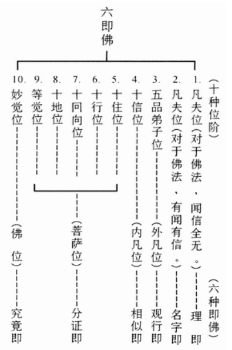

|
“如说修行”网上佛学院 佛说阿弥陀经要解注姚秦·三藏法师鸠摩罗什 译 清·西有沙门?q益智旭 解 湛然 注
《阿弥陀经要解》是净土修学中，极其重要的一部论著。印光大师非常推崇，开示道：“大集经云：‘末法亿亿人修行，罕一得道，唯依念佛得度生死。’是知念佛一法，乃上圣下凡共修之道，若愚若智通行之法。下手易而成功高，用力少而得效速。以其专仗佛力，故其利益殊胜，超越常途教道。昔人谓：‘余门学道，似蚁子上于高山；念佛往生，如风帆扬于顺水。’可谓最善形容者矣。若欲研究，《阿弥陀经》有?q益大师所著要解，理事各臻其极，为自佛说此经来第一注解，妙极确极。纵令古佛再出于世，重注此经，亦不能高出其上矣。” 现注释如下。文中标题是注释者所加，不属于《要解》原文。 经题佛说阿弥陀经 【注】《佛说阿弥陀经》，乃世尊不问自说之心要，各方佛赞之深经，究竟方便之妙法，最极圆顿之指归。 经中，世尊教人专持阿弥陀佛名号，以修净土之行，横超三界，往生极乐，圆证三不退地，一生成佛。行由愿而立，愿由信而生。故首先详陈依正庄严以起信，其次特劝应当求往生以发愿，然后正示执持名号以立行。在本经中，世尊特别开示了如何确保往生西方极乐世界：信愿持名，一心不乱。从而立定了净土宗之宗纲。 净宗第九代祖?q益大师在本《要解》“明宗”一节中云：“信，则信自、信他，信因、信果，信事、信理；愿，则厌离娑婆，欣求极乐；行，则执持名号，一心不乱。” 净宗第十二祖彻悟大师云：“一心不乱乃净业之归宿，净土之大门。若未入此门，终非稳妥，学者可不勉哉！”（《彻悟大师法语》） 〔三不退〕一、位不退，于修得之位不退失；二、行不退，于所修之行法不退失；三、念不退，于正念不退转。
阿弥陀经有两个译本，一是姚秦时鸠摩罗什大师所译的《佛说阿弥陀经》，常称秦译；一是唐代玄奘大师所译的《称赞净土佛摄受经》，常称唐译。罗什大师应国人尚简之机，以意译为主，文约义丰，精妙畅达。玄奘大师则采用逐字直译，准确完备，力保原面。精研经义时，将两种译本相互对照，就能够有更深刻更准确的理解。 例如，在《佛说阿弥陀经》中：“舍利弗！若有善男子、善女人，闻说阿弥陀佛，执持名号，若一日、若二日、若三日、若四日、若五日、若六日、若七日，一心不乱，其人临命终时，阿弥陀佛与诸圣众现在其前，是人终时心不颠倒，即得往生阿弥陀佛极乐国土。” 在这段经文中，净宗学人十分关切：如何是“一心不乱”的境界？长期以来，众说纷纭，争论不休。 《称赞净土佛摄受经》的译文是：“舍利子！若有净信诸善男子或善女人，得闻如是无量寿佛无量无边不可思议功德名号、极乐世界功德庄严，闻已思惟。若一日夜，或二或三，或四或五，或六或七，系念不乱。是善男子或善女人，临命终时，无量寿佛与其无量声闻弟子菩萨众俱，前后围绕来住其前，慈悲加?v，令心不乱。既舍命已，随佛众会，生无量寿极乐世界清净佛土。” 两相对照，就清楚了：“一心不乱”即是“系念不乱”。
在《称赞净土佛摄受经》中，世尊开示道：“汝等有情，皆应信受如是称赞不可思议佛土功德，一切诸佛摄受法门。”所以，持名念佛是一切诸佛摄受之法门，而且世尊在本经中具体明确地开示了如何修持这一法门。 世尊在讲了“若有净信诸善男子或善女人，得闻如是无量寿佛无量无边不可思议功德名号、极乐世界功德庄严；闻已思惟，若一日夜，或二或三，或四或五，或六或七，系念不乱。是善男子或善女人，临命终时，无量寿佛与其无量声闻弟子菩萨众俱，前后围绕来住其前，慈悲加?v，令心不乱。既舍命已，随佛众会，生无量寿极乐世界清净佛土”，就立即说道：“若有净信诸善男子或善女人，得闻如是无量寿佛不可思议功德名号、极乐世界净佛土者，一切皆应信受发愿，如说修行，生彼佛土。” 世尊在这里把信、愿、行讲得十方清楚：信，是“信受”；愿，是“发愿”；行，是“如说修行”。 当信、愿还仅只停留在头脑中时，这只是一种想法而已。必须把信、愿实践出来，这才是真信笃愿。所以，真信笃愿必然导致力行。若无切实精进的修行，何以证其所信？何以满其所愿？没有力行的信、愿，只不过是虚信浮愿而已。 在《称赞净土佛摄受经》中，世尊反反复复、再三再四地叮咛要“如说修行”，并且明确的告诉我们：只要如说修行，就为十方诸佛所摄受，就一定往生西方极乐世界，就永不退转速证佛果，关切之情，溢于言表。世尊开示道：
问：《称赞净土佛摄受经》云“闻已思惟”，如何思惟？ 答：称念佛之名号（执持名号）。《文殊般若经》云：“善男子、善女人，欲入一行三昧，应处空闲，舍诸乱意，不取相貌，系心一佛，专称名字。” 问：我也知道信愿持名一心不乱能够自在往生，而且欣羡不已。问题是，这样高的境界一般人怎么达得到？ 答：一心不乱其实就是系念不乱（见阿弥陀经的唐译本《称赞净土佛摄受经》），即?q益大师所言：“历历分明，不昏不散是也。”（《?q益大师净土集·梵室偶谈》）这样的境界，只要方法正确，刻苦努力，人人都可以达到，这就是为什么说净土法门是万修万人去的法门。 问：怎样来达到念佛一心不乱？ 答：《觉知念佛》和《参究念佛》都讲述了达到念佛一心不乱的具体修持方法。 译者姚秦三藏法师鸠摩罗什译 【注】本经（《佛说阿弥陀经》）是姚秦时代，三藏法师鸠摩罗什所译。 〔姚秦〕历史上有三个秦王朝，一个是战国时期的秦国直到秦始皇统一天下的秦王朝；第二个秦王朝是在五胡十六国时期，国主是苻坚；第三个秦王朝是苻坚的大将姚苌弑苻坚而自立，国号亦称秦，后人为了区别于苻坚时的秦王朝，称其为姚秦，亦称后秦。〔舍利子〕即舍利弗。〔三藏〕“三藏”，经藏、律藏和论藏。经藏，为佛所说的经文；律藏，为佛所制的戒律；论藏，如来所说阿毗昙（意思是无比法）等论，及佛弟子所造诸论。〔三藏法师〕经、律、论三藏都精通的比丘。〔鸠摩罗什〕（350-413年）汉译童寿，本是印度人，生长于龟兹（位于新疆维吾尔自治区之库车县和沙雅县的中间），出家后，通大乘经论，后秦姚兴弘始三年（公元401年）到达长安，在逍遥园翻译经典。前后所译经论，凡三百八十余卷，在姚秦弘始十五年（公元413年）示寂于长安。寂后火化，舌头不烂，显示所翻译经典，绝对可靠无误。 解者清·西有沙门?q益智旭解 【注】《佛说阿弥陀经要解》是净宗第九代祖，明末清初高僧?q益大师所著。本书言简义丰，理事透辟，是《净土十要》之第一要。 〔?q益智旭〕（1599-1655年）明代高僧，净土宗第九代祖。吴县（江苏）木渎人，俗姓钟，号智旭字?q益，又号八不道人。由于晚居灵峰（浙江杭县）建寺、创社、著书，故世称灵峰?q益大师。少好儒学，誓灭释老。十七岁时，偶阅莲池大师之《自知录》、《竹窗随笔》，遂取所著辟佛论焚毁而转信佛教。服父丧期间，闻《地藏菩萨本愿经》，始萌出家之志。二十二岁专致念佛。次年发四十八愿，自称“大朗优婆塞”。二十四岁，恭就憨山大师之门人雪岭大师剃度。?q益大师尝学华严、天台、唯识，欲统一禅、教、律，综合佛教诸家体系，惟实践上偏重念佛。主张融合佛、道、儒三教。门人成时法师编其遗文《灵峰?q益大师宗论》十卷（简称《灵峰宗论》）。 大师五十六岁时示疾，遗命火化后，磨骨和以粉面，分施鸟兽和鱼介，普结法喜。趺坐绳床角，向西举手而逝。圆寂三年后，门人如法荼毗。启龛，见大师发长覆耳，面貌如生，趺坐巍然。火化后，牙齿俱不坏。因此不敢遵从“磨骨和粉”之遗命，而奉灵骨，建塔于灵峰之大殿右。 〔净土十要〕这是?q益大师选定的净土要籍十卷：内有《阿弥陀经要解》，《往生净土忏愿仪》，《往生净土决疑行愿二门》，《观无量寿佛经初心三昧门》，《受持佛说阿弥陀经行愿仪》，《净土十疑论》，《念佛三昧宝王论》，《净土或问》，《宝王三昧念佛直指》，《西斋净土诗》，《净土生无生论》，《净土法语》，《西方合论》。 五重玄义【要解】原夫诸佛悯念群迷，随机施化。虽归元无二，而方便多门。然于一切方便之中，求其至直捷、至圆顿者，则莫若念佛求生净土。又于一切念佛法门之中，求其至简易、至稳当者，则莫若信愿专持名号。是故净土三经并行于世，而古人独以《阿弥陀经》列为日课。岂非有见于持名一法，普被三根，摄事理以无遗，统宗教而无外，尤为不可思议也哉！ 【注】念佛法门乃一切法门中至捷、至圆、至顿者，而信愿持名又是念佛法门中至简、至易、至稳当者。 〔原夫〕发语之辞。〔归元〕还归真寂本元（涅??）。〔虽归元无二，而方便多门〕虽然修行都是为了返本还源（归元），但是具体的修持法门（方便）却有种种。〔净土三经〕净土宗所依据的三部经典：阿弥陀经、观无量寿经和无量寿经。〔宗教〕宗门与教下。“宗门”，是指禅宗；除禅宗之外，其它九宗（俱舍宗、成实宗、天台宗、华严宗、真言宗、法相宗、三论宗、净土宗、律宗）均称“教下”。 【要解】古来注疏，代不乏人，世远就湮，所存无几。云栖和尚著为《疏钞》，广大精微。幽溪师伯述《圆中钞》，高深洪博。盖如日月中天，有目皆睹，特以文富义繁，边涯莫测，或致初机浅识，信愿难阶。故复弗揣庸愚，再述《要解》。不敢与二翁竞异，亦不必与二翁强同。譬如侧看成峰，横看成岭，纵皆不尽庐山真境，要不失为各各亲见庐山而已。 【注】说明著述《要解》之因由。 〔代不乏人〕历代不乏其人。〔云栖〕明代高僧莲池大师，净宗第八代祖师。〔和尚〕吾师的意思，是僧徒对其亲教师的尊称。〔云栖和尚〕虽未谋面，?q益大师心仪莲池大师为自己的亲教师。〔疏钞〕莲池大师所著之《阿弥陀经疏钞》。〔幽溪〕明代高僧传灯大师。〔圆中钞〕传灯大师所著之《阿弥陀经略解圆中钞》。〔盖〕发语词。〔初机〕初学之人。〔信愿难阶〕难以籍之生信发愿。 【要解】将释经文，五重玄义。 【注】“玄义”，是在讲解经文之前，先阐明本经所诠释的深妙义理。此乃一经之纲要，令读者先识总体，后研经文，纲举目张，易于把握领会。“五重玄义”，又名五重玄谈。天台宗智者大师在讲解佛经之时，皆立五重玄义：一、释名，解释经题；二、辨体，辨明一经之指归；三、明宗，说明修行之宗旨；四、论用，由宗旨而论一经之作用（果效）；五、判教，判别教义之大小权实。 〔大小〕大乘小乘。〔权实〕适宜于一时的教法叫做“权”，究竟而不变的教法叫做“实”。 （一）释名【要解】第一、释名。此经以能说所说人为名。“佛”者，此土能说之教主，即释迦牟尼，乘大悲愿力，生五浊恶世，以先觉觉后觉，无法不知，无法不见者也。“说”者，悦所怀也。佛以度生为怀，众生成佛机熟，为说难信法，令究竟脱，故悦也。“阿弥陀”，所说彼土之导师，以四十八愿，接信愿念佛众生生极乐世界，永阶不退者也。梵语阿弥陀，此云无量寿，亦云无量光。要之，功德智慧、神通道力、依正庄严、说法化度，一一无量也。一切金口，通名为“经”。对上五字，是通别合为题也。教行理三，各论通别，广如台藏所明。 【注】〔释名〕解释经题“佛说阿弥陀经”。〔通别合为题〕经题“佛说阿弥陀经”六字中，有通别之分。前五字与诸经之题不同，是别；后一字与诸经之题通同，是通。所以，经题“佛说阿弥陀经”，是通别合为一题。〔教行理三，各论通别，广如台藏所明〕除了经题有通别，教、行、理这三方面亦有通别，其义甚广，如《天台藏》所讲。〔天台〕浙江省台州天台县之山名，隋朝时智者大师居于此山开一宗，后世因名其宗为天台宗，简称天台或台宗。 （二）辨体【要解】第二、辨体。大乘经皆以实相为正体。吾人现前一念心性，不在内、不在外、不在中间，非过去、非现在、非未来，非青黄赤白、长短方圆，非香、非味、非触、非法。觅之了不可得，而不可言其无。具造百界千如，而不可言其有。离一切缘虑分别、语言文字相，而缘虑分别、语言文字非离此别有自性。要之，离一切相，即一切法。离故无相，即故无不相，不得已强名实相。 【注】〔辨体〕辨明一经之指归。〔实相〕真实之相，大乘经皆以实相为正体。《佛藏经》云：“何等名为诸法实相？所谓诸法毕竟空，无所有。”〔一念〕念即心念。若凡夫以根对尘所起之念，念念生灭，此妄念也；若离根尘，真净明妙，虚彻灵通之念，即是如来正智之念也。〔心性〕即吾人之心体——自性。〔非香、非味、非触、非法〕这里的香、味、触、法是六尘（色、声、香、味、触、法）中的后四者。 【要解】实相之体，非寂非照，而复寂而恒照、照而恒寂。照而寂，强名常寂光土。寂而照，强名清净法身。又、照寂强名法身，寂照强名报身。又、性德寂照名法身，修德寂照名报身。又、修德照寂名受用身，修德寂照名应化身。寂照不二，身土不二，性修不二，真应不二，无非实相。实相无二，亦无不二。是故举体作依作正，作法作报，作自作他。乃至能说所说，能度所度，能信所信，能愿所愿，能持所持，能生所生，能赞所赞，无非实相正印之所印也。 【注】上举寂照、身土、性修、真（法身）应（应化身）、理事，悉皆不二者，因为究其实相而言，彼此无别。?q益大师接着又进一步阐明：实相不仅不二，亦无不二。 〔实相无二，亦无不二〕《佛藏经》云：“何等名为诸法实相？所谓诸法毕竟空，无所有。”诸法之实相既然毕竟空、无所有，言其二与不二，皆成戏论。故云：“实相无二，亦无不二。”〔实相正印〕正印者，正法印也。〔法印〕佛法之印契，这是佛佛相递持的真理之印，是佛法的准则，不合于法印者，即非佛法。小乘法是以“三法印”来印定。三法印是：诸行无常印、诸法无我印、涅??寂静印。大乘法是以“实相印”来作印定，实相印又名诸法实相印。由于诸法实相已经涵盖了诸行无常、诸法无我、涅??寂静，故称为一法印或一实相印。大乘法以说诸法实相之义理为本，离开诸法实相而说法，皆为魔说。《法华经》中，佛言：“我以相严身，光明照世间，无量众所尊，为说实相印。”《三藏法数》云：“盖如来所说诸大乘经，皆以实相理印定其说。外道不能杂，天魔不能破。若有实相印，则是佛说；若无实相印，则是魔说。”智者大师《法华玄义》云：“诸小乘经，若有无常、无我、涅??三印之印证，即佛说，修之得道；无三法印，即是魔说。大乘经但有一法印，谓诸法实相，名了义经，能得大道；若无实相印，是魔说。”于《法华文句》中又云：“诸佛觉如实之相，乘此实道，出应于世。只令众生得此实相，唯为此事出应于世，曾无他事。除诸法实相，全皆名魔事。” （三）明宗【要解】第三、明宗。宗是修行要径，会体枢机，而万行之纲领也。提纲则众目张，挈领则襟袖至。故体后应须辨宗。此经以信愿持名为修行之宗要。非信不足启愿，非愿不足导行，非持名妙行不足满所愿而证所信。经中先陈依正以生信，次劝发愿以导行，次示持名以径登不退。信，则信自、信他，信因、信果，信事、信理；愿，则厌离娑婆，欣求极乐；行，则执持名号，一心不乱。 【注】“明宗”——阐明修行之要径。本经以信愿持名一心不乱为修行之要径。?q益大师根据经义，对“信愿持名”作了明确的定义：“信，则信自、信他，信因、信果，信事、信理。愿，则厌离娑婆欣求极乐。行，则执持名号，一心不乱。”凡《要解》中提到“信愿持名”，其含义都是：信——信自、信他，信因、信果，信事、信理；愿——厌离娑婆，欣求极乐）；行——持名号一心不乱。文中“非持名妙行不足满所愿而证所信”与“行则执持名号，一心不乱”连贯起来看，其具体意思是：非一心不乱之持名妙行，不足满所愿，而证所信。所以深信切愿的落脚点和具体表现是在一心不乱之持名妙行。 〔会体枢机〕贯彻修行宗旨是领悟（会）一经指归（体）之关键（枢机）。这里的“体”是上一节“辨体”之正体——实相，?q益大师云：“大乘经皆以实相为正体。”〔枢机〕门之开闭由枢（门上的转轴），弩之发动由机（发箭的机牙，亦名扳机）。“枢机”，指事物的关键。 问：有一种说法：“若有真信切愿，散心念佛也一定往生。”这种说法正确吗？ 答：“若有真信切愿，散心念佛也一定往生”，这根本就是谬论！是把信愿与行割裂开来。 信愿行三者是环环相扣，不可分割的一个整体，彼此间的关系是：以信启愿，以愿导行；以行满愿，以行证信。没有力行的信愿，是虚行浮愿。所以?q益大师开示道：“此经以信愿持名为修行之宗要。非信不足启愿，非愿不足导行，非持名妙行不足满所愿而证所信。”许许多多关于怎样能够往生的谬论制造者，其共同点的特征，就是把信愿与行割裂开来。有的甚至鼓吹：只要有信愿即得往生！信即往生！ 佛和祖师都一再教导要一心念佛，并且一再叮咛要如说修行（详见《称赞净土佛摄受经注》）。因此，真信切愿者，必定是如说修行，而一心念佛（详见《一心念佛，而不是散心念佛》）。散心念佛者，正是由于畏难畏苦，因而违背佛和祖师的教导而行，这正是信不真愿不切的具体表现（详见下面阿弥陀佛再来的永明大师之开示）。所以，散心念佛者，即如永明大师所说的：“信力轻微。”因此，散心念佛者，信愿一定不真切。“散心念佛而又真信切愿”这种情形，根本就不存在，是伪命题，就如同不存在临阵畏缩的勇敢战士一样。 “若有真信切愿，散心念佛亦能往生”是说：散心念佛而又真信切愿亦能往生。但是，既然“散心念佛而又真信切愿”这种情形都不存在，哪里谈得到往生不往生的事呢？所以，“若有真信切愿，散心念佛也一定往生”根本就是谬论。 永明大师在《万善同归集》中开示道：“如或言行不称，信力轻微，无念念相续之心，有数数间断之意（即散心念佛）。恃其懈怠，临终望生，但为业障所遮，恐难值其善友，风火逼迫，正念不成。” 〔恐难值其善友〕恐怕难以遇到能够加持他做到临终正念的大善知识。 在这段开示中，永明大师明确指出：为什么会散心念佛（“无念念相续之心，有数数间断之意”）呢？这是因为“言行不称，信力轻微”。所以，言行相符，信愿真切的人，一定是一心念佛。而散心念佛，正说明此人是“言行不称，信力轻微”。而且永明大师特别指出：散心念佛是懈怠之行，这样懈怠下去（“恃其懈怠”），临终之时“风火逼迫，正念不成”，因此不得往生。 〔言行不称〕言行不符：口头上说自己是真信切愿，而实际行动却是懈怠的（既不真又不切）：“无念念相续之心，有数数间断之意。” 所以，要害在于：散心念佛能不能够成就临终正念？因为临终正念是能否往生的关键。对此，道绰大师开示道：“智者勤摄心，临终意不散（于是成就临终正念而往生）。不习心专至，临终必散乱（于是不能够成就临终正念而六道轮回）。”（详见《道绰大师净土教法》）历来祖师大德，莫不如此开示、教导。 因此，永明大师接着就开示道：“何以故？如今是因，临终是果，应须因实，果则不虚。如要临终十念成就（如果要成就临终十念相续），但预办津梁（就要预先做好充分准备），合集功德，回向此时（回向临终之时），念念不亏（念念相续），即无虑矣。”（《万善同归集》）” 〔临终十念成就〕成就临终十念相续。（详见《临终十念，相续即生》一文）〔但预办津梁〕就要预先做好充分准备。“津梁”：渡口和桥梁。“预办津梁”就是预先做好充分准备。 在以上开示中，永明大师把信愿与行、行与往生的因果关系阐述得一清二楚：信愿是因，行是果；行是因，往生是果。所以，“应须因实，果则不虚”。信愿行三者之间的关系是：以信启愿，以愿导行；以行满愿，以行证信。 问：有文章说：“前几年往生的，二十年行了十次般舟三昧的妙莲老和尚发了第四十九大愿：散心念佛也能往生。”是这样吗？ 答：据我所知，妙莲老和尚的四十九大愿是：“凡见过我面，听过我法，乃至闻我名号者，我皆度令同往西方极乐世界；若其此生未能生西方者，我必再来化度，直至生西为止。”而不是：“散心念佛也能往生。”你可以到网上去查对。 如果真的有人发“散心念佛也能往生”的四十九大愿，则是在谤佛，是在指责阿弥陀佛为什么不接引散心念佛的众生。这样的人，自己不懂佛法，还竟然如此狂妄地发四十九大愿，要超于阿弥陀佛之上！ 事实上，每一个众生临终之时，阿弥陀佛都在接引，包括散心念佛的众生。只不过没有临终正念的众生看不到而已，便跟着自己的妄想而随业受生去了。所以，必须要有临终正念，才看得到阿弥陀佛前来接引，而随佛往生西方极乐世界。 对于这一道理，誉为江南古佛的中峰大师在《三时系念》中开示道：“然虽谓弥陀，摄取众生往生，要信唯是随心自现，感应道交，究竟（毕竟）非从外得。” 〔唯是随心自现〕阿弥陀佛来接引（摄取）众生，仅是随心自现，这是感应道交的缘故，而非从外得。所以只有临终正念者能见佛来，而周围的其他人看不见。对于那些没有临终正念的临终众生，由于自心浊乱，没有正念（十念相续）之感，自然阿弥陀佛之接引也就不会在心中应现，所以也看不见佛来，而不是阿弥陀佛没有来接引。所以，得生与否，完全取决于自己有无临终正念（临终十念相续）。这就是为什么阿弥陀佛再来的善导大师和阿弥陀佛再来的永明大师都谆谆教导：要成就临终十念相续（详见《第十八愿》）。这可是阿弥陀佛的教导啊！〔感应道交〕众生之感与阿弥陀佛之应，相互交通。 对于临终感应道交之原理，大势至菩萨再来的印光大师在《初机净业指南序》中开示道： “众生之心如水，阿弥陀佛如月。众生信愿具足，至诚感佛，则佛应之，如水清月现也。若心不清净，不至诚，与贪?_痴相应，与佛相背，如水浊而动，月虽不遗照临，而不能昭彰影现也。” 译文：众生之心如水，阿弥陀佛如月。众生信愿具足，至诚感佛，则佛应之，如水清而静则月现（喻正念之净心感现阿弥陀佛之接引）。若是心不清净，不至诚，与贪?_痴相应，而与佛相违背，则如水浊而动，佛月虽然不遗漏地照临（喻阿弥陀佛总是在接引每一个临终之众生），但是不能够昭彰影现啊（喻动浊之乱心不能够感现阿弥陀佛之接引，却跟着自己的妄想，而随业受生去了）。 “唯水清而静则现，水浊而动则隐。月固无取?危?其不现者，由水昏浊奔腾，无由受其影现耳。” 译文：只有水清而静则月影现，水浊而动则月影不现。月固然是没有取?蔚卣樟伲?之所以不现，这是由于水昏浊奔腾，无法呈现月影。（喻：只有那些临终正念的众生，才能够看到阿弥陀佛之接引，而没有临终正念的众生却看不到阿弥陀佛之接引。阿弥陀佛固然是没有取舍地接引每一个临终之众生，而那些没有临终正念的众生之所以看不到阿弥陀佛接引，是由于自心昏浊散乱，于是跟着自己的妄想，而随业受生去了。） 所以，对念佛人而言，临终一心正念，极其重要。千念万念，以至终日终年念佛者，无非为熟此念佛一念，以确保临终之时此念相续不断，感现阿弥陀佛之接引。因此，阿弥陀佛再来的善导大师和阿弥陀佛再来的永明大师都谆谆教导：要成就临终十念相续（详见《往生的条件》）。这是圣言量！阿弥陀佛的话不听，还听谁的？ 〔相续〕念佛之念相继，不杂妄念。〔圣言量〕这是圣人所说，正确无误，定可信受。 【要解】信自者，信我现前一念之心，本非肉团，亦非缘影；竖（时间）无初后，横（空间）绝边涯；终日随缘，终日不变。 【注】信自者，是以本心为自心，而不是以肉团心（心脏）、缘虑心（六尘缘影）为自心。 〔缘虑心〕攀缘尘境而起种种分别取舍之心。 【要解】十方虚空微尘国土，元我一念心中所现物。我虽昏迷倒惑，苟一念回心，决定得生自心本具极乐，更无疑虑。是名信自。 【注】十方虚空微尘国土，原来都是我一念心中所现之物。既然一切皆是自心所现，西方极乐世界当然也是自心所现。我等虽然迷惑颠倒，而本心不失；如果一念回心，决定得生自心本具之极乐世界。于此更无疑虑，是名信自。 【要解】信他者，信释迦如来决无诳语，弥陀世尊决无虚愿，六方诸佛广长舌决无二言。随顺诸佛真实教诲，决志求生，更无疑惑，是名信他。 【注】〔广长舌〕三十二相之一。舌广而长，柔软红薄，能覆面至发际。舌相如是，语必真实。 【要解】信因者，深信散乱称名，犹为成佛种子，况一心不乱，安得不生净土？是名信因。 【注】大师在这里明确指出：散乱称名，是成佛种子。 〔成佛种子〕种成佛之远因。例如，世尊在世之时，一老翁来至佛所，欲求出家修道。佛适他往，诸大弟子皆得宿命通，见老人久远以来未种善根，今即出家亦难得益，故不允许。老人自惭障深，甚为悲伤。佛归见之，准其出家，未久即得阿罗汉果。诸大弟子咸起惊疑，问佛所以。佛言：汝等宿命通，仅知八万劫内事。老翁于八万劫外，身为樵夫入山采柴，路遇猛虎，大惊避逃上树。虎亦追迹而至，以口啮树，将及半。樵夫急而无可奈何，不觉夺口而称南无佛。以此称名功德之善根种子，所以今得出家修道 。 【要解】信果者，深信净土诸善聚会，皆从念佛三昧得生，如种瓜得瓜，种豆得豆，亦如影必随形，响必应声，决无虚弃。是名信果。 【注】信果者，深信往生极乐世界与诸上善人俱会一处，皆由念佛三昧而得。 〔诸善聚会〕《佛说阿弥陀经》云：“舍利弗！众生闻者，应当发愿，愿生彼国。所以者何？得与如是诸上善人，俱会一处。”〔三昧〕汉译为定，是定心一处的意思。《智度论》云：“善心一处住不动，是名三昧。” 【要解】信事者，深信只今现前一念不可尽故，依心所现十方世界亦不可尽。实有极乐国在十万亿土外，最极清净庄严，不同庄生寓言。是名信事。 【注】信事者，深信西方极乐世界如同我们现在所居世界一样是实有的，不同于《庄子》里面的寓言。 【要解】信理者，深信十万亿土，实不出我今现前介尔一念心外，以吾现前一念心性实无外故。又深信西方依正主伴，皆吾现前一念心中所现影。全事即理，全妄即真，全修即性，全他即自。我心遍故，佛心亦遍，一切众生心性亦遍。譬如一室千灯，光光互遍，重重交摄，不相妨碍。是名信理。 【注】信理者，深信西方极乐世界是我现前介尔一念心中所现。“依正主伴”泛指极乐世界的一切。 〔介尔一念心〕现前刹那之一念心。“介尔”，形容至微至小。“介”，弱、小之义；“尔”，系助辞。〔依正主伴〕这里，“依”（依报）指极乐世界的四土（凡圣同居土、方便有余土、实报庄严土、常寂光土），“正”（正报）指阿弥陀佛与那里众生；“主”即阿弥陀佛，“伴”即那里众生（菩萨、声闻、人、天）。〔全事即理，全妄即真，全修即性，全他即自〕“全”在这里是透彻的意思。真正透彻了，就体悟到事理不二、真妄不二、性修不二、自他不二，就更能够体悟到心土不二。 【要解】如此信已，则娑婆即自心所感之秽，而自心秽，理应厌离。极乐即自心所感之净，而自心净，理应欣求。厌秽须舍至究竟，方无可舍。欣净须取至究竟，方无可取。故《妙宗》云：取舍若极，与不取舍亦非异辙。设不从事取舍，但尚不取不舍，即是执理废事。既废于事，理亦不圆。若达全事即理，则取亦即理，舍亦即理。一取一舍，无非法界。故次信而明愿也。 【注】深信既立，故生切愿：厌离娑婆，欣求极乐。厌离欣求（自心离秽求净）当从事上做起，不可执理废事。 〔妙宗〕宋四明尊者所著《观无量寿经疏妙宗钞》，简称《妙宗钞》。 【要解】言执持名号一心不乱者，名以召德，德不可思议，故名号亦不可思议。名号功德不可思议，故使散称为佛种，执持登不退也。然诸经示净土行，万别千差。如观像、观想、礼拜供养、五悔、六念等，一一行成，皆生净土。唯持名一法，收机最广，下手最易。故释迦慈尊，无问自说，特向大智舍利弗拈出，可谓方便中第一方便，了义中无上了义，圆顿中最极圆顿。故云：清珠投于浊水，浊水不得不清；佛号投于乱心，乱心不得不佛也。 【注】行者，执持名号一心不乱。净土之行，万别千差，而持名一法，收机最广，下手最易，可谓方便中第一方便，了义中无上了义，圆顿中最极圆顿。 〔散称为佛种，执持登不退〕这是古文中照应前文而常用的简略笔法，意思是：散乱称名犹为成佛种子，执持名号一心不乱者，则生极乐径登不退位。〔五悔〕天台智者大师为了修习法华三昧的人，而订出五条忏悔法：一、忏悔，发露自己已往之罪而诫将来；二、劝请，劝请十方诸佛以转法轮；三、随喜，对于自他一切善根随喜赞叹；四、回向，以所修之功德趣向于众生及佛道；五、发愿，发四弘愿以导引前面之四行。〔六念〕念佛、念法、念僧、念戒、念施、念天。 【要解】信愿持名，以为一乘真因；四种净土，以为一乘妙果。举因则果必随之，故以信愿持名为经正宗。其四种净土之相，详在《妙宗钞》，及《梵网玄义》，兹不具述。俟后释依正文中，当略示耳。 【注】再次点明信愿持名一心不乱为本经正宗。要特别注意的是，?q益大师在这一节已经对信愿行作了明确的界定：信，则信自、信他，信因、信果，信事、信理；愿，则厌离娑婆，欣求极乐；行，则执持名号，一心不乱。所以，凡后文所言“信”，即是信自、信他，信因、信果，信事、信理；所言“愿”，即是厌离娑婆，欣求极乐；所言“行”、“持名”或“执持”，即是执持名号一心不乱。 〔四种净土〕又名四佛土、四土，即凡圣同居土、方便有余土、实报庄严土、常寂光土。凡圣同居土是凡夫与为了化度众生而现身说法的圣人共同居住的国土；方便有余土是二乘与没有证得法身的菩萨所住的国土；实报庄严土是佛的报身与地上菩萨所住的国土；常寂光土是从佛的清净法身所示寂的国土。 关于三身四土，省庵大师在其《西方净土文注》中解释道：“问：只一西方，何分四土？又只是一佛，何有三身？得无割裂分张邪（古同“耶”）？答：如只是一月，而有光影不同，又如只是一镜，而有影像，光明不同。何曾割裂光影，分张镜像邪？法身如月，报身如光，化身如影。寂光如镜体，实报如镜光，方便、同居如镜影像。在佛则唯一法性身，居寂光土。为十地、三十心菩萨（十住、十行、十回向，名三十心），现圆满报身，居实报土。为声闻菩萨，现胜劣二身，居方便土。为凡夫初发心菩萨，现劣应身，居同居土。” 〔胜劣二身〕胜应身和劣应身。天台宗将佛之应身分为胜、劣二种，其胜者称为胜应身，是对于初地以上之菩萨而应现之身。其劣者称为劣应身，例如佛对于地前凡夫及二乘人所应现的丈六佛身。〔地前〕初地以前。地前是凡夫菩萨，要到地上才是法身菩萨。 （四）论用【要解】第四、明力用。此经以往生不退为力用。 【注】“论用”，由宗旨而论一经之力用（果效）。本经以往生极乐世界，径登不退位为力用。经云：“极乐国土众生生者，皆是阿?@跋致。” 〔阿?@跋致〕汉译：不退转。是说功德善根，愈增进而无退失退转，直至成佛。通常，菩萨要经过一大阿僧?o劫的修行，才至此不退转位。 【要解】往生有四土，各论九品。且略明得生四土之相：若执持名号，未断见思，随其或散或定，于同居土分三辈九品；若持至事一心不乱，见思任运先落，则生方便有余净土；若至理一心不乱，豁破无明一品，乃至四十一品，则生实报庄严净土，亦分证常寂光土；若无明断尽，则是上上实报，究竟寂光也。 【注】〔各论九品〕凡圣同居土以见思惑之轻重分九品，方便有余土以尘沙惑之轻重分九品，实报庄严土和常寂光土以无明惑之轻重分九品。〔随其或散或定〕这里的“散”是指念佛虽未得定，但已经做到了妄起不续的地步。〔三惑〕见思惑、尘沙惑、无明惑。见惑是凡夫在见解上的迷惑错误，如身见、边见、邪见、见取见、戒禁取见之五不正见；思惑是凡夫们在思想上的迷惑错误，如贪、?_、痴、慢、疑之烦恼。此二惑是众生流落三界枉受生死的根源，断之即能了生死、出三界。尘沙惑是菩萨之惑，菩萨化度众生，如果不通达如尘如沙的无量法门，就不能完成教化众生的事业，故名尘沙惑。无明惑是根本无明，能障蔽中道实相之理，断尽即成佛。在三惑中，见思为粗，尘沙属中等，无明为细。
【要解】不退有四义：一、念不退，破无明，显佛性，径生实报，分证寂光。二、行不退，见思既落，尘沙亦破，生方便土，进趋极果。三、位不退，带业往生，在同居土，莲华托质，永离退缘。四、毕竟不退，不论至心散心，有心无心，或解不解，但弥陀名号，或六方佛名，此经名字，一经于耳，假使千万劫后，毕竟因斯度脱。如闻涂毒鼓，远近皆丧，食少金刚，决定不消也。 【注】不退有四义：一、念不退者，念念流入如来果海，破无明，显佛性，直接生实报庄严土，并分证常寂光土。二、行不退者，见思惑既断，尘沙惑亦破，生方便土，常修度生之行，上求佛道。三、位不退者，带业往生凡圣同居土，由于莲华化生，永离退堕之缘。四、毕竟不退者，不论至心念、散心念，有心念、无心念，或者解义、不解义，只要阿弥陀佛名号，或者六方佛名、此经（佛说阿弥陀经）名字，一经历到耳根，便储入阿赖耶识，成为佛种子，永远不坏。假使经过千万劫后，善根成熟，毕竟因此而得度脱。闻名得度之普及，犹如听到涂毒鼓的声音，其贪?_痴远近皆丧（息灭）；而闻名后的佛种子永存不坏，犹如服下少量金刚，决定不会因时间的流逝而消失。 〔涂毒鼓〕此鼓涂有毒料，令人闻其声即死。禅宗以此比喻师家令学人息灭贪?_痴之机言。全豁禅师曰：“吾教意犹如涂毒鼓。击一声，远近闻者皆丧。”（《传灯录》） 【要解】复次，只带业生同居净证位不退者，皆与补处俱（都与候补佛位的补处菩萨一样），亦皆一生必补佛位（都是一生成佛）。夫上善一处，是生同居，即已横生上三土，一生补佛，是位不退，即已圆证三不退。如斯力用，乃千经万论所未曾有。较彼顿悟正因，仅为出尘阶渐，生生不退，始可期于佛阶者，不可同日语矣。宗教之士，如何勿思？ 〔宗教之士〕这里的“宗教”是指宗门教下。 （五）教相【要解】第五、教相。此大乘菩萨藏摄。又是无问自说，彻底大慈之所加持，能令末法多障有情，依斯径登不退。故当来经法灭尽，特留此经住世百年，广度含识。阿伽陀药，万病总持，绝待圆融，不可思议。华严奥藏，法华秘髓，一切诸佛之心要，菩萨万行之司南，皆不出于此矣。欲广叹述，穷劫莫尽，智者自当知之。 【注】本经教相是大乘菩萨藏摄，是华严奥藏，法华秘髓，一切诸佛之心要，菩萨万行之司南。 〔判教〕判别教义之大小权实。〔菩萨藏〕大乘经的总称。因含藏大乘菩萨修因证果的方法，故名“菩萨藏”。〔摄〕佛以慈教摄受众生也。〔有情〕又名众生，即一切有情识的动物。〔含识〕）含有心识者，即有情也。〔阿伽陀药〕又称不死药。此药灵奇，价值无量，服之能普去众疾。〔司南〕我国古代辨别方向用的一种仪器，相当于现代的指南针。 一、法会圣众【要解】入文分三：初、序分，二、正宗分，三、流通分。此三名初善、中善、后善。序如首，五官具存。正宗如身，脏腑无阙。流通如手足，运行不滞。故智者释《法华》，初一品皆为序，后十一品半皆为流通。又一时迹本二门，各分三段。则法师等五品，皆为迹门流通。盖序必提一经之纲，流通则法施不壅，关系非小。后人不达，见经文稍涉义理，便判入正宗。致序及流通，仅存故套。安所称初语亦善，后语亦善也哉！ 【注】经文分为三大部分：一、序分；二、正宗分；三、流通分。序分是序说本经发起之因由。正宗分是本经之正说。流通分是列举受持本经之利益，劝赞受持、读诵、流通。?q益大师在此强调切勿轻视序分和流通分。 〔智者〕名智?，是天台宗初祖。此宗以《法华经》、《涅??经》、《大品般若经》、《大智度论》等为主，明一心三观的妙理。〔一时〕《天台观经疏》云：“今不论长短假实，说此经竟，总谓为一时。”〔迹本二门〕本地门与垂迹门，简称指本门与迹门。这是天台智者大师所立，后来诸家注释《法华经》无不大判之以本门与迹门。“本”是说久成之本地；“迹”是说近成之垂迹。本门，指如来于久远往昔已经成道之本地；迹门，指如来新近示现之佛陀为教化众生而应化垂迹。
甲一、序分：乙一、通序；乙二、别序 乙一、通序：丙一、标法会时处；丙二、引大众同闻
丙一、标法会时处 〔通序〕这是诸经共通的序说（“如是我闻。一时，佛在……”）。例如本经的第一段（“如是我闻。一时，佛在舍卫国，?o树给孤独园，与大比丘僧千二百五十人俱。……”）就是通序。通序又名证信序，因其具备信、闻、时、主、处、众等六事，以证明经中所说为真确可信。此六事亦称六成就，具备这六种因缘以成就讲经法会。 〔六成就〕诸经通序中，举出六件事以资证明此经确乃佛亲口所说，称为“六成就”。以本经通序“如是我闻。一时，佛在舍卫国，?o树给孤独园，与大比丘僧，千二百五十人俱”为例：一、“如是”，是信成就，佛是这样说的；二、“我闻”，是闻成就，此经为我（阿难）亲耳所闻，并非辗转传闻的；三、“一时”，是时成就，即讲经法会的时间，是师资道合，机教相叩之时；四、“佛”，是主成就，说法之主；五、“在舍卫国，?o树给孤独园”，是处成就，说法的道场；六、“与大比丘僧，千二百五十人俱”，是众成就，听经的大众。由于明确地指出本经是集经者（阿难）亲自听闻佛如是说，并标明说法之主以及讲经的时间、地点及与会人物等等，令众生知道此经确实无误，因而起信，故通亦称证信序。
如是我闻。一时，佛在舍卫国，?o树给孤独园。 【要解】如是，标信顺。我闻，标师承。一时，标机感。佛，标教主。舍卫等，标说经处也。 【注】“如是”，是信成就；“我闻”，是闻成就；“一时”，是时成就；“佛”，是主成就；“在舍卫国，?o树给孤独园”，是处成就。 〔一时〕那个时侯。这是指佛说此经之时，亦即师资道合，机教相叩之时。如来说法，通乎人天，结集流传，遍于世界，因其年月日纪，难以相同，故用“一时”记之。〔师资〕师、生，师、徒。〔机教相叩〕“机”是听众之根机；“教”是佛之施教。众生之根机各异，佛乃随其机，施以深浅之教。“机教相叩”是说法会听众之根基与佛之施教感应契合。 【要解】实相妙理，古今不变名“如”。依实相理，念佛求生净土，决定无非曰“是”。实相非我非无我，阿难不坏假名，故仍称“我”。耳根发耳识，亲聆圆音，如空印空名“闻”。 【注】这是解释“如是我闻”。 〔假名〕虚假的名字。诸法本来无名，是人给它假设了一个名字，这个名字既虚假不实，且又不合实体。〔阿难不坏假名〕阿难已无我见、我慢，为随顺世间故，不坏假名“我”，故仍无我而称我。〔如空印空名闻〕能闻是空，所闻亦是空，故言：如空印空，名之为闻。此一义理在般若经中讲得十分透彻。《金刚经》云：“凡所有相，皆是虚妄。”（（详见《金刚经精解》一文））《心经》云：“无眼耳鼻舌身意，无色声香味触法。”（详见《心经经精解》一文）） 【要解】时无实法，以师资道合，说听周足名“一时”。自觉觉他，觉行圆满，人天大师名“佛”。 【注】〔时无实法〕时间是幻象。 【要解】舍卫，此云闻物，中印度大国之名，波斯匿王所都也。匿王太子名只陀，此云战胜。匿王大臣名须达多，此云给孤独。给孤长者布金买太子园，供佛及僧。只陀感叹，施余未布少地。故并名?o树给孤独园也。 【注】〔舍卫国〕其位置在今印度西北部，拉普的河的南岸，当时的国王是波斯匿王。〔?o树〕?o陀（只陀）太子之树林。〔给孤独〕给孤独长者（“长者”，对德高望重之人的尊称）。他是舍卫国都城之豪商须达多，性情慈善，喜欢布施孤、独（“孤”，是失去父母者；“独”，是失去配偶者。“孤独”，泛指无依无靠的穷苦人），所以获得“给孤独”之美名。〔园〕林园。〔?o树给孤独园〕舍卫国都城的一个林园，释迦牟尼佛在那里讲的这部经。此园的树林属于舍卫国的?o陀太子，而土地属于给孤独长者，他俩共同献佛，故名“?o树给孤独园”，意思是?o陀太子的树林、给孤独长者的园地，佛陀常在那里讲经说法。共献园林的故事是：佛在摩揭陀国说法时，舍卫国的给孤独长者乞求佛来舍卫城度化国人，佛许之。长者归国后，遍寻处所，以?o陀太子之林园最为适合佛陀讲经说法，因欲购买。太子戏言曰：“布金满地，厚敷五寸即卖。”长者许诺而行之。太子为长者诚心感动，曰：“人之所贵，莫过金宝。彼能倾家买地以造僧园，我何所乏而无修建？”于是自发胜心供养，请悔先约。长者不从，太子曰：“许地取金，未论林树。地随汝主，林属我身，共助成功，但陈供养。”佛来此地，谓阿难曰：“园地，给孤独长者所买；树林，?o陀太子所施。二人同心，共崇功德。自今已后，应谓此地为?o树给孤独园。”
丙二、引大众同闻：丁一、声闻众；丁二、菩萨众； 丁三、天人众
【要解】声闻居首者，出世相故，常随从故，佛法赖僧传故。菩萨居中者，相不定故，不常随故，表中道义故。天人列后者，世间相故，凡圣品杂故，外护职故。 【注】解释为什么声闻（大比丘僧）居首、菩萨居中、天人列后。
丁一、声闻众：戊一、明类标数；戊二、表位叹德； 戊三、列上首名
戊一、明类标数 与大比丘僧，千二百五十人俱。 【要解】大比丘，受具足戒出家人也。比丘梵语，含三义：一、乞士，一钵资身，无所蓄藏，专求出要；二、破恶，正慧观察，破烦恼恶，不堕爱见；三、怖魔，发心受戒，羯磨成就，魔即怖也。僧者，具云僧伽，此翻和合众。同证无为解脱，名理和。身同住，口无诤，意同悦，见同解，戒同修，利同均，名事和也。千二百五十人者，三迦叶师资共千人，身子（即舍利弗）、目连师资二百人，耶舍子等五十人。皆佛成道，先得度脱，感佛深恩，常随从也。 【注】〔千二百五十人〕这一千二百五十位大比丘是佛的常随众。据《过去现在因果经·卷第四》，这一千二百五十人中：耶舍（耶舍子）为首的小团体五十人，优楼频螺迦叶师徒五百人，那提迦叶师徒二百五十人，伽耶迦叶师徒二百五十人，舍利弗（身子）师徒一百人，大目犍连（目连）师徒一百人。此一千二百五十人先事外道，后承佛之化导而得证果，于是感佛之恩，一一法会，常随不离，称为常随众。故诸经之首列举法会众，多云“千二百五十人俱”。〔俱〕在一起。
戊二、表位叹德 皆是大阿罗汉，众所知识。 【要解】阿罗汉亦含三义：一、应供，即乞士果；二、杀贼，即破恶果；三、无生，即怖魔果。复有慧解脱、俱解脱、无疑解脱三种不同，今是无疑解脱，故名大。又本是法身大士，示作声闻，证此净土不思议法，故名大也。从佛转轮，广利人天，故为众所知识。 【注】阿罗汉是声闻乘中的最高果位。“阿罗汉”一词在梵文中含有杀贼、无生、应供等义。“杀贼”，是杀尽烦恼之贼；“无生”，是解脱生死不受后有；“应供”，是应受天上人间的供养。
戊三、列上首名 长老舍利弗、摩诃目犍连、摩诃迦叶、摩诃迦旃延、摩诃俱?罗、离婆多、周利??陀伽、难陀、阿难陀、罗侯罗、?x梵波提、宾头卢颇罗堕、迦留陀夷、摩诃劫宾那、薄拘罗、阿那楼驮，如是等诸大弟子。 【要解】德腊俱尊，故名长老。身子尊者（即舍利弗）声闻众中，智慧第一。目连尊者（即摩诃目犍连）神通第一。饮光尊者（即摩诃迦叶）身有金光，传佛心印为初祖，头陀行第一。文饰尊者（即摩诃迦旃延），婆罗门种，论议第一。大膝尊者（即摩诃俱?罗），答问第一。星宿尊者（即离婆多），无倒乱第一。继道尊者（即周利??陀伽），因根钝仅持一偈，辩才无尽，义持第一。喜尊者（即难陀），佛之亲弟，仪容第一。庆喜尊者（即阿难，阿难陀之略称），佛之堂弟，复为侍者，多闻第一。覆障尊者（即罗侯罗），佛之太子，密行第一。牛?谧鹫?（即?x梵波提），宿世恶口，感此余报，受天供养第一。不动尊者（即宾头卢颇罗堕），久住世间，应末世供，福田第一。黑光尊者（即迦留陀夷），为佛使者，教化第一。房宿尊者（即摩诃劫宾那），知星宿第一。善容尊者（即薄拘罗），寿命第一。无贫尊者（即阿那楼驮），亦佛堂弟，天眼第一。 【注】〔德腊〕德行和戒腊（比丘受具足戒后之年数）。〔身子〕舍利弗的汉译名。梵语舍利，汉译为身，弗多罗汉译为子。 【要解】此等常随众，本法身大士，示作声闻，为影响众。今闻净土摄受功德，得第一义悉檀之益，增道损生，自净佛土，复名当机众矣。 【注】这些常随众本是法身大士，而示作声闻作为影响众。如今听闻净土摄受功德，得第一义悉檀之益，因而增证法身进破无明，自净心土，故亦称之为当机众。 〔影响众〕为四众之一。诸佛与法身菩萨，为了协助释迦如来的教化，于是应现如影如响之身，以拥护释迦如来的道场。〔四众〕佛说法时的四类听众：一、发起众，发起讲经的人；二、当机众，听法就能获益的人；三、影响众，如他方来助佛宣扬佛法的菩萨；四、结缘众，如一般下根的薄福众生。〔第一义悉檀〕四悉檀之一。〔四悉檀〕四种普遍法施。“悉”是普遍之义，“檀”是梵语檀那之简称，亦即布施之义。佛以四种法普施众生，以令一切众生完成佛道，叫做“四悉檀”：一、世界悉檀，佛开始时，先顺世界之凡情，宣说浅近之事理，以令闻者欢喜和信受；二、为人悉檀，佛审察众生的根机，及程度之浅深，而说各人所须要之法，令众生发起正信，增长善根；三、对治悉檀，对?_多者教以慈悲观，痴多者教以因缘观，障多者教以念佛观，如是普施种种之法药，以去除众生的恶病；四、第一义悉檀，佛见众生的机缘既熟，便为之说诸法实相，以令众生一起悟入圣者之道。〔增道损生〕“道”即中道法身。损生者，损无明之生长也。“增道损生”是说证一分中道法身，损一品无明。〔自净佛土〕净自心之佛土。
丁二、菩萨众 并诸菩萨摩诃萨，文殊师利法王子、阿逸多菩萨、乾陀诃提菩萨、常精进菩萨，与如是等诸大菩萨。 【要解】菩萨摩诃萨，此云大道心成就有情。乃悲智双运，自他兼利之称。佛为法王，文殊绍佛家业，名法王子，菩萨众中，智慧第一。非勇猛实智，不能证解净土法门，故居初（故居第一）。弥勒（即阿逸多菩萨）当来成佛，现居等觉（等觉菩萨），以究竟严净佛国为要务，故次列。不休息者（乾陀诃提的汉译是“不休息”），旷劫修行不暂停故。常精进者（常精进菩萨），自利利他无疲倦故。此等深位菩萨，必皆求生净土，以不离见佛，不离闻法，不离亲近供养众僧，乃能速疾圆满菩提故。
丁三、天人众 及释提桓因等，无量诸天大众俱。 【要解】释提桓因，此云能为主，即忉利天王。等者，下等四王（即四王天），上等夜摩、兜率、化乐、他化，色、无色无量诸天也。大众俱，谓十方天人、八部、修罗，人非人等无不与会，无非净土法门所摄之机也。 【注】〔八部〕即八部众：天众、龙众、夜叉（华译勇健鬼）、乾闼婆（华译香神）、阿修罗（华译非天）、迦楼罗（华译金翅鸟）、紧那罗（华译非人）、摩?T罗迦（华译大蟒神或大腹行地龙）。由于人类的眼睛不能见到这些八部众，所以又叫做“冥众八部”。又因为八部众以天龙为最殊胜，所以又叫做“天龙八部”。〔修罗〕阿修罗之略称。“阿修罗”汉译为非天，因其有天之福而无天之德，似天而非天。又译作无端，因其容貌很丑陋。又译作无酒，言其国酿酒不成。性好斗。〔人非人等无不与会〕人与非人等，无不与会。 【要解】通序竟。 【注】通序完。 二、极乐世界乙二、别序（发起序） 【注】〔别序〕通序之后是别序，这是各经序分中彼此不同之处。例如本经的第二段（“尔时，佛告长老舍利弗：从是西方过十万亿佛土，有世界名曰极乐。其土有佛，号阿弥陀，今现在说法。”）就是别序。别序又名发起序，说明此法会是如何发起的。 【要解】净土妙门，不可思议，无人能问，佛自唱依正名字为发起。又、佛智鉴机无谬，见此大众应闻净土妙门而获四益，故不俟问，便自发起。如《梵网》下卷自唱位号云“我今卢舍那”等，智者判作发起序，例可知也。 【注】〔四益〕即四悉檀之益：一、世界悉檀，得欢喜益，闻佛说有西方极乐世界，清净庄严，国中有佛，现在说法，心生欢喜；二、为人悉檀，得生善益，闻说欲生彼国，则知闻净土妙门即能生善；三、对治悉檀，得灭恶益，依教专修净行，念念相续，而得灭除身口意三业之恶；四、第一义悉檀，得入理益，教令持名念佛，念到日久功深，豁悟实相第一义谛之理，即得理一心不乱。
尔时，佛告长老舍利弗：从是西方，过十万亿佛土，有世界名曰极乐。其土有佛，号阿弥陀，今现在说法。 【要解】净土法门，三根普摄，绝待圆融，不可思议。圆收圆超一切法门，甚深难信。故特告大智慧者（长老舍利弗），非第一智慧，不能直下无疑也。 【要解】西方者，横亘直西，标示现处也。十万亿者，千万曰亿，今积亿至十万也。佛土者，三千大千世界，通为一佛所化。且以此土言之，一须弥山，东西南北各一洲，同一日月所照，一铁围山所绕，名一四天下。千四天下名小千世界，千小千名中千世界，千中千名大千世界。过如此佛土十万亿之西，是极乐世界也。 【要解】问：何故极乐在西方？答：此非善问。假使极乐在东，汝又问何故在东，岂非戏论。况自十一万亿佛土视之，又在东矣，何足致疑。 【要解】“有世界名曰极乐”，序依报国土之名也。竖约三际以辨时劫，横约十方以定疆隅，故称世界。极乐者，梵语须摩提，亦云安养、安乐、清泰等，乃永离众苦第一安隐之谓，如下广释。 【注】〔序〕叙说。〔依报〕身体依之而住的果报，如国土、山河、大地、房屋器具等等，即生活的环境。经云：“依报随着正报转。”〔正报〕指众生的身心。因为众生的身心是依过去的业因而召感得来的果报正体，故名正报。依报和正报合称二报。〔竖约三际以辨时劫，横约十方以定疆隅，故称世界〕这是解释经文“有世界名曰极乐”中的“世界”一词。过去现在未来为“世”，东西南北上下为“界”。〔三际〕指过去、现在、未来三时，亦称三世。〔安隐〕安稳。〔如下广释〕详见后文“广释”这一节（即“丁二、广释”）。 【要解】然佛土有四，各分净秽。凡圣同居土，五浊重者秽，五浊轻者净。方便有余土，析空拙度证入者秽，体空巧度证入者净。实报无障碍土，次第三观证入者秽，一心三观证入者净。常寂光土，分证者秽，究竟满证者净。今云极乐世界，正指同居净土，亦即横具上三净土也。 【注】〔五浊〕一、劫浊，言时代遭逢恶运，灾难频生；二、烦恼浊，指世人心中充满贪、?_、痴等烦恼；三、众生浊，指众生资质低劣，苦多乐少；四、见浊，指邪见流行，思想混乱；五、命浊，指众生因恶业受报，心身交瘁，寿命短促。〔拙度〕济度法之拙者。〔巧度〕济度法之巧者。〔次第三观〕修天台空假中三观，先从假入空，次从空入假，后乃双离空假，入中道第一义观。〔一心三观〕这是天台宗圆教的观法。天台宗说宇宙万有，都具有空假中三种谛理，而这三种谛理又互具互融，空即假中，假即空中，中即空假，如果我们在一心之中这样作观，即叫做“一心三观”。〔分证者〕尚未破尽无明的地上菩萨。〔地上菩萨〕十地位上的菩萨。〔十地〕菩萨五十二位修行中，第五个十位名十地，在此十地，渐开佛界，成一切种智，已属圣位，故又名“十圣”。 〔今云极乐世界，正指同居净土，亦即横具上三净土也〕现今所说的极乐世界，正是指凡圣同居土。而凡圣同居土又横具方便有余土、实报庄严土、常寂光土：佛在凡圣同居土，该土即是常寂光土；菩萨在凡圣同居土，该土即是实报庄严土；声闻在凡圣同居土，该土即是方便有余土。 【要解】“有佛号阿弥陀”，序正报教主之名也，翻译如下广释。 【注】〔翻译如下广释〕“阿弥陀”的含义详见后文“丁二、广释”这一节。 【要解】佛有三身，各论单复。法身单，指所证理性。报身单，指能证功德智慧。化身单，指所现相好色像。法身复者，自性清净法身、离垢妙极法身。报身复者，自受用报身、他受用报身。化身复者，示生化身、应现化身。又佛界化身，随类化身。虽辨单复三身，实非一非三，而三而一。不纵横，不并别，离过绝非，不可思议。今云阿弥陀佛，正指同居土中示生化身，仍复即报即法也。 【注】讲述佛之三身：法身、报身、应化身。 【要解】复次，世界及佛皆言有者，具四义：的标实境，令欣求故；诚语指示，令专一故；简非干城阳焰，非权现曲示，非缘影虚妄，非保真偏但，破魔邪权小故；圆彰性具，令深证故。 【注】复次，言有极乐世界及阿弥陀佛，具以下四义：一、的确标显，西方依正（即极乐世界及阿弥陀佛），是现在的实境，令众生心生欣慕，求生彼国；二、释迦牟尼佛及六方佛以诚语指示持名念佛法门，令得专一其心，净念相继；三、辨明这不是幻境（非干城、阳焰），不是权现、曲示，不是缘影虚妄，不是藏教保真、藏教之偏真、别教之但中，乃是圆教圆中之妙有，以破魔邪、权小之谬论；四、圆彰西方依正二报，乃自性本具，令得深证。 〔简〕简择区分。〔干城〕乾闼婆城之略。别名鬼城。蜃气楼也。乾闼婆者，印度乐人之异名，乐人巧幻楼阁，因而空中所现之蜃楼，名为乾闼婆城。〔阳焰〕乃田间游气，春晴伏地可见，远看似水，近看则无。渴鹿逐阳焰，即错认为水也。〔权现〕权宜化现。〔保真偏但〕“保真”，乃藏教保真涅??。“偏”，谓藏教之偏真。“但”，谓别教之但中。今西方依正二有，乃圆教圆中之妙有，故非保真、非偏、非但也。〔藏教〕三藏教之略称。天台宗化法四教之一。〔化法四教〕三藏教、通教、别教、圆教。“三藏教”即是经律论三藏，部类判然，说因缘生灭之四谛，正教声闻缘觉，旁化菩萨；“通教”是说即空无生之四真谛，使三乘通学，但以菩萨为正机，二乘为旁机；“别教”是特别对菩萨说大乘无量之法，不通于二乘；“圆教”是对最上利根的菩萨说事理圆融之中道实相。以上藏通别圆四教，因是佛教化众生的法门，故名“化法”。〔权小〕权教（方便的教法）、小乘。〔性具〕从本以来就有。 【要解】“今现在说法者”，简上依正二有，非过去已灭，未来未成，正应发愿往生，亲觐听法，速成正觉也。 【注】“今现在说法”者，表明上文所讲的极乐世界和阿弥陀佛，并非过去已灭的，或者未来未成的，而是如今现在的，所以正应发愿往生，亲自朝见阿弥陀佛听法，以速证佛果啊！ 〔依正二有〕指经文“有世界名曰极乐。其土有佛，号阿弥陀”。 【要解】复次，二有现在，劝信序也；世界名极乐，劝愿序也；佛号阿弥陀，劝持名妙行序也。 【注】〔二有现在〕指经文“有世界名曰极乐。其土有佛，号阿弥陀，今现在说法”。 【要解】复次，阿弥序佛，说法序法，现在海会序僧。佛法僧同一实相，序体；从此起信愿行，序宗；信愿行成，必得往生见佛闻法，序用；唯一佛界为所缘境，不杂余事，序教相也。言略意周矣。 【注】复次，经文“其土有佛，号阿弥陀，今现在（海会）说法”中，“阿弥陀”是序说佛，“说法”是序说法，“现在海会”是序说僧。佛、法、僧同一实相，是序说经体；从此起信愿行，是序说宗旨；信愿行成，必得往生见佛闻法，是序说力用；唯一佛界为所缘境，不杂余事，是序说教相。言虽简略而五重玄义之意周全矣。 【要解】初，序分，竟。 【注】第一大部分“序分”，到此结束。下面开始第二大部分“正宗分”。
甲二、正宗分：乙一、广陈彼土依正妙果以启信；乙二、特劝众生应求往生以发愿； 乙三、正示行者执持名号以立行
【要解】信愿持名，一经要旨。信愿为慧行，持名为行行。得生与否，全由信愿之有无；品位高下，全由持名之深浅。故慧行为前导，行行为正修，如目足并运也。 【注】“信、愿、持名，一经要旨”，是说：信愿行三者密不可分，是本经要旨亦是净土修行之要径。“信愿为慧行，持名为行行”和“故慧行为前导，行行为正修，如目足并运也”是说：信愿是前导，如像眼睛；持名是正修，如像双足。没有眼睛会乱走，而没有足根本不能够前行。所以，从“得生与否，全由信愿之有无；品位高下，全由持名之深浅”的上下文来看，这两句的意思是说：得生者，必须要有信愿；而且还必须有持名功夫，功夫深者高品位往生，功夫浅者低品位往生。 问者：“得生与否，全由信愿之有无”的意思应该是：只要有信愿，即得往生。 答：这样理解，有三个问题： 一、如果这样来理解，那么“得生与否，全由信愿之有无；品位高下，全由持名之深浅”的意思就是：只要有信愿，即得往生；只要有持名功夫，即得往生（功夫深者，高品位往生；功夫浅者，低品位往生）。这样一来，前半段说只要有信愿，即得往生；后半段说只要有持名功夫，即得往生。那么，往生究竟是只要有信愿，还是只要有持名功夫呢？试想，?q益大师怎么会讲出这样自相矛盾的话来！？所以，要特别注意“全由”与“全凭”二词在含义上的差别：“全由”是必要条件（必不可少的条件），“全凭”是充分条件（只要具备这一条件就够了）。 二、在这段文中，?q益大师讲得很清楚，信愿是前导（引路），持名是正修（履行），怎么可以只要有前导而无正修就可以了呢？而且大师还形象地譬喻说：信愿如目，持名如足，那么行人要到目的地（西方极乐世界），就必须眼睛要看路、足要行走（目足并运），怎么可以只要有眼睛看路而足不行走就到目的地了呢？正如?q益大师在本《要解》前面“明宗”一节中开示道：“宗是修行要径......。此经以信愿持名为修行之宗要。非信不足启愿，非愿不足导行，非持名妙行不足满所愿而证所信。......信，则信自、信他，信因、信果，信事、信理；愿，则厌离娑婆，欣求极乐；行，则执持名号，一心不乱。” 三、?q益大师这一段开示是： “信愿持名，一经要旨。信愿为慧行，持名为行行。得生与否，全由信愿之有无；品位高下，全由持名之深浅。故慧行为前导，行行为正修，如目足并运也。” 在“得生与否，全由信愿之有无；品位高下，全由持名之深浅”这一句之前是“信愿为慧行，持名为行行”，之后是“故慧行为前导，行行为正修，如目足并运也”。要照你的理解，就是只要慧行、前导、目，而不用行行、正修、足，就可以到达目的地了，这哪里是?q益大师的原意呢？更何况，?q益大师是在注解《佛说阿弥陀经》，佛在经中讲到信愿持名一心不乱能够确保往生西方极乐世界，?q益大师怎么会在注解时说道只要信愿就确保往生西方极乐世界呢？ 再者，请注意：?q益大师在上文阐释信愿行时，明确指出：“非持名妙行，不足满所愿而证所信。......行，则执持名号，一心不乱。”将信愿行的关系，以及行的要求，讲得一清二楚。 念佛之所以要一心，是因为“有唯心净土，方生西方净土；由念佛之净心，感生西方之净土”——这是念佛往生之原理。 印光大师的这段开示原文是：“有唯心净土，方生西方净土。若自心不净，何能即得往生？纵逆恶罪人，以十声念佛即得往生者，由念佛之净心，感生西方之净土。”（《印光法师文钞·答曲天翔居士问二十七则》）印光大师又云：“以散心念佛，难得往生。此法能令心归一处，一心念佛，决定往生。”（《印光法师文钞·与陈锡周居士书》）又云：“既有真信切愿，当修念佛正行。以信愿为先导，念佛为正行。信愿行三，乃念佛法门宗要。有行无信愿，不能往生。有信愿无行，亦不能往生。信愿行三，具足无缺，决定往生。得生与否，全由信愿之有无。品位高下，全由持名之深浅。”（《印光法师文钞·与陈锡周居士书》） 所以，确保往生的要诀是：真信切愿，一心不乱。这也是念佛人的修学纲领。因为真信，眼光晓了前境，对目标和道路看得清清楚楚；因为切愿，动力强大无比，若决江河，沛然莫之能御。有了真信切愿，就必然会遵循世尊“如说修行”的谆谆教导，而导致一心不乱之妙行，并以此一心不乱之妙行来证其所信，满其所愿：“今既一心不乱，（临命终时）则内凝正念，外感佛迎，舍此报身，竟生彼国。”（莲池大师《阿弥陀经疏钞》） 〔沛然莫之能御〕浩浩荡荡，无论什么都不能够抵挡。 关于真信、切愿和力行三者之间的关系，彻悟大师（净宗第十二祖）开示道：“不信姑置（不信者，姑且放在一边不说他们）。即如信者，信而不愿，犹不信也。愿而无行，犹弗愿也。行而不猛，犹弗行也。行之所以不猛，由愿不切。愿之所以不切，由信不真。总之，生真信难。信果真矣，愿自能切。愿果切矣，行自能猛。真切信愿，加以勇猛力行，决定得生净土，决定得见弥陀，决定证三不退，决定一生补佛。”（《彻悟大师遗集》） 净宗第十一祖省庵大师云：“又有口谈净土，心恋娑婆者，亦非愿也。又、愿之一字，具该信、行。信则自他因果，事理不虚（信得自心是佛，他人亦然，念佛为因，往生作佛为果实也。西方是事，离心本性是理，一一真实，故云不虚）；行则专事持名，不杂不散；愿则心心好乐，念念希求。如此三事，缺一不可。有信行而无愿者有矣，未有有愿而无信行者也。问：有人闻说西方净土，心生好乐，然不念佛，得往生否？答：若果心生好乐，定起希求；若起希求，必然念佛。好乐不希求，定非好乐；希求不念佛，岂是希求？好乐希求念佛而不往生者，未之有也。问：有人於此，亦好、亦求、亦念，但世间心重，贪恋尘劳，得往生否？答：只要将猛，不怕贼强。若果希求心切，系念心专，则贪恋虽重，自然渐渐轻微，亦当往生。如舍银取金，舍鱼取熊掌，则亦何难之有？第恐愿力不敌爱力，佛念不胜欲念，悠悠忽忽，半信半疑，则吾末如之何也已矣。”（《西方净土文注》） 〔第恐〕只怕。〔则吾末如之何也已矣〕（对这样的人）我拿他实在是没有办法了。“末”，没有。 所以，愿力是否敌得过爱力，佛念是否敌得过欲念，这是检验信愿是否真切的标准。
问：怎样能够达到念佛一心不乱？ 答：达到念佛一心不乱的最大障碍，是妄念。在“如说修行网上佛学院”的实修教材《觉知念佛》一书中，详细分析了妄念产生的原因，以及如何有效地克服妄念；并且详细讲解了，怎样达到念佛一心不乱的具体修学步骤和方法。只要是真信切愿，刻苦努力，循序渐进，持之以恒，就一定能够达到念佛一心不乱。
乙一、广陈彼土依正妙果以启信：丙一、依报妙； 丙二、正报妙 丙一、依报妙：丁一、征释；丁二、广释 丁一、征释：戊一、征；戊二、释
戊一、征 【注】〔征〕追问。
舍利弗！彼土何故名为极乐？
戊二、释：己一、约能受用释；己二、约所受用释 己一、约能受用释 【注】〔约能受用释〕就能受用来解释。这里“约”有如“就”字。〔约所受用释〕就所受用来解释。
其国众生，无有众苦，但受诸乐，故名极乐。 【要解】众生是能受用人，等觉以还皆可名。今且约人民言，以下下例上上也。 【注】众生是能受用之人，等觉菩萨及其下都可以称为众生。现在且就同居土之人民而言极乐，下下品尚且如是，那么上上品之极乐就更不待言。 【要解】娑婆苦乐杂。其实，苦是苦苦，逼身心故；乐是坏苦，不久住故；非苦非乐是行苦，性迁流故。彼土永离三苦，不同此土对苦之乐，乃名极乐。 【注】娑婆世界虽说是苦乐相杂，其实统统都是苦。苦，当然是苦，逼迫身心故，称为苦苦；乐，也是苦，不久住故，称为坏苦；非苦非乐也是苦，性迁流故，称为行苦。极乐世界永离此三苦，不同此土（娑婆世界）乐是相对于苦而言，所以叫做极乐。 〔三苦〕苦苦、坏苦、行苦。“苦苦”，世人有生死之身，已经够苦了，再加上众苦逼迫，简直苦上加苦，故谓之苦苦；“坏苦”，偶而出现之乐境失去时所感受的苦；“行苦”，诸行无常迁流不息不得安定的苦。 【要解】一往分别：同居五浊轻，无分段八苦，但受不病不老，自在游行，天食天衣，诸善聚会等乐；方便体观巧，无沈空滞寂之苦，但受游戏神通等乐；实报心观圆，无隔别不融之苦，但受无碍不思议乐；寂光究竟等，无法身渗漏，真常流注之苦，但受称性圆满究竟乐。 【注】大略分别比较娑婆世界之四土（凡圣同居土、方便有余土、实报庄严土、常寂光土）与极乐世界之四土（凡圣同居土、方便有余土、实报庄严土、常寂光土）的苦乐：极乐世界的凡圣同居土，五浊轻，无分段生死和八苦，而是不病不老，但受自在游行，天食天衣，诸善聚会等乐；极乐世界的方便有余土，皆秉圆教观，无沈空滞寂之苦，但受游戏神通等乐；极乐世界的实报庄严土，皆秉一心三观证入，观智圆融之故，无三观前后隔别、三谛不融之苦，但受无碍不思议乐；极乐世界的常寂光土，受用与佛等同，故无法身渗漏、真常流注之苦，但受称性圆满究竟乐。 〔分段八苦〕分段生死之八苦。〔二种生死〕分段生死和变易生死。分段生死是凡夫们于三界内肉体上的生死；变易生死是菩萨们于三界外精神上心念生灭的生死。〔八苦〕一、生苦，即出生时的痛苦；二、老苦，即年老体弱的痛苦；三、病苦，即患病时的痛苦；四、死苦，即临死时的痛苦；五、爱别离苦，即与所爱分离的痛苦；六、怨憎会苦，即与仇人见面的痛苦；七、求不得苦，即所求不遂的痛苦；八、五阴炽盛苦，即五阴的作用炽盛，盖覆真性，故死了之后，复须再生。〔方便体观巧〕此土（娑婆世界）之方便有余土，有藏教析空观，拙度证入者，有通教体空观，巧度证入者，皆沉滞化城，偏空寂灭之苦，而极乐世界之方便有余土，皆秉圆教观，体色即空证入，不滞空寂，即能从真出假，游戏神通，净佛国土，成熟众生，故曰但受游戏神通等乐。〔实报心观圆〕极乐世界之实报庄严土，皆秉一心三观证入，观智圆融之故，无三观前后隔别、三谛不融之苦，故云但受无碍不思议乐。〔寂光究竟等〕极乐世界之常寂光净土受用与佛等同，故无法身渗漏、真常流注之苦，但受称性圆满究竟乐。 【要解】然同居众生，以持名善根福德同佛故，圆净四土，圆受诸乐也。复次，极乐最胜，不在上三土，而在同居。良以上之则十方同居，逊其殊特，下又可与此土较量。所以凡夫优入而从容，横超而度越。佛说苦乐，意在于此。 【注】然而生极乐世界凡圣同居土之众生，持名是以因心彰果德，故善根福德同佛，圆净四土，圆受诸乐。复次，极乐世界最为殊胜者，不在上三土（方便有余土、实报庄严土和常寂光土），而在凡圣同居土。主要是因为：向上比，则十方佛国之同居土不及极乐世界之同居土那样殊胜奇特；向下比，又可与此土（娑婆世界）相较量。所以凡夫持名念佛优入而从容，横超而度越。佛说苦乐之意，正在凡圣同居土。 〔优入〕往生极乐世界同居土者，由凡夫而达善根福德同佛，圆净四土，圆受诸乐，故曰优入。〔从容〕路广而人稀。《无量寿经》云：“升道无穷极，易往而无人。”印光大师云：“自是不归，归便得，故乡风月有谁争？”〔横超〕自力修行者，须断尽见思烦恼，方出同居土而入方便土；断尽尘沙烦恼，兼破无明，方入实报土；断尽无明，方入寂光土；此名竖出。念佛人仗阿弥陀佛愿力，未断见思，即能出娑婆秽土，生极乐净土；到了极乐世界，即能由同居土，不必舍身受身，直接证入方便土、实报土、乃至寂光土，故名横超。〔度越〕从此岸度越到彼岸，指往生极乐世界同居土者一生成佛。
己二、约所受用释 又，舍利弗！极乐国土，七重栏?J，七重罗网，七重行树，皆是四宝，周匝围绕，是故彼国名为极乐。 【要解】七重，表七科道品。四宝，表常、乐、我、净四德。周匝围绕者，佛菩萨等无量住处也。皆四宝则自功德深，周匝绕则他贤圣遍，此极乐真因缘也。 【注】〔栏?J〕横曰栏，直曰?J，俗称栏杆。〔四宝〕金，银，琉璃，玻璃。〔七科道品〕即三十七道品。因三十七道品可分七科（四念处、四正勤、四如意足、五根、五力、七菩提分、八正道分），故亦称三十七道品为七科道品。〔三十七道品〕即四念处、四正勤、四如意足、五根、五力、七菩提分、八正道分，总共三十七品，为修道的重要资粮，故名“三十七道品”。内容如下： 一、四念处，又作四念住。（1）身念处，即观此色身皆是不净。（2）受念处，观苦乐等感受悉皆是苦。（3）心念处，观此识心念念生灭，更无常住。（4）法念处，观诸法因缘生，无自主自在之性，是为诸法无我。 二、四正勤，又作四正断。（1）已生恶令永断。（2）未生恶令不生。（3）未生善令生。（4）已生善令增长。 三、四如意足，又作四神足。（1）欲如意足，希慕所修之法能如愿满足。（2）精进如意足，于所修之法，专注一心，无有间杂，而能如愿满足。（3）念如意足，于所修之法，记忆不忘，如愿满足。（4）思惟如意足，心思所修之法，不令忘失，如愿满足。 四、五根。根，即能生之意，此五根能生一切善法。（1）信根，笃信正道及助道法，则能生出一切无漏禅定解脱。（2）精进根，修于正法，无间无杂。（3）念根，乃于正法记忆不忘。（4）定根，摄心不散，一心寂定，是为定根。（5）慧根，对于诸法观照明了，是为慧根。 五、五力。力，即力用，能破恶成善。（1）信力，信根增长，能破诸疑惑。（2）精进力，精进根增长，能破身心懈怠。（3）念力，念根增长，能破诸邪念，成就出世正念功德。 （4）定力，定根增长，能破诸乱想，发诸禅定。（5）慧力，慧根增长，能遮止三界见思之惑。 六、七觉分，又作七觉支、七觉意。（1）择法觉分，能拣择诸法之真伪。（2）精进觉分，修诸道法，无有间杂。（3）喜觉分，契悟真法，心得欢喜。（4）除觉分，能断除诸见烦恼。（5）舍觉分，能舍离所见念着之境。（6）定觉分，能觉了所发之禅定。（7）念觉分，能思惟所修之道法。 七、八正道，又作八圣道、八道谛。（1）正见，能见真理。（2）正思惟，心无邪念。（3）正语，言无虚妄。（4）正业，住于清净善业。（5）正命，依法乞食活命。（6）正精进，修诸道行，能无间杂。（7）正念，能专心忆念善法。（8）正定，身心寂静，正住真空之理。 【要解】此等庄严，同居净土是增上善业所感，亦圆五品观所感，以缘生胜妙五尘为体；方便净土是即空观智所感，亦相似三观所感，以妙真谛无漏五尘为体；实报净土是妙假观智所感，亦分证三观所感，以妙俗谛无尽五尘为体；常寂光土是即中观智所感，亦究竟三观所感，以妙中谛称性五尘为体。欲令易解，作此分别，实四土庄严，无非因缘所生法，无不即空假中。所以极乐同居净境，真俗圆融，不可限量。下皆仿此。 【注】分别说明四土之能感因和所感果。 〔五尘〕色、声、香、味、触。〔圆五品观〕天台宗所立圆教菩萨六行位（六即）中之“观行即”。此位乃既知名字而起观行，心观明了，理慧相应之位，能成就五品功德：（一）随喜品，（二）读诵品，（三）说法品，（四）兼行六度，（五）正行六度。〔相似三观〕修一心三观，证入相似位。〔分证三观〕修一心三观，证入分证位。〔究竟三观〕修一心三观，证入究竟位。〔一心三观〕一心，即能观之心；三观，即空、假、中三观。了知“一念心”不可得、不可说，能于一心中圆修空、假、中三谛者，即称一心三观，为圆教观法。〔无不即空假中〕无不即空、即假、即中。〔下皆仿此〕下有显理处，悉皆仿此。 〔六即〕又名六即佛，天台宗所立，以示由凡夫修行，乃至佛果的位次：一、理即佛，一切众生，虽轮回六道，日处尘劳烦恼中，与觉体相背，然而佛性功德，仍然具足，故名“理即佛”。二、名字即佛，或从知识处，或由经典中，得闻即心本具不生不灭的佛性，于名字中，通达了解，知一切法，皆为佛法，一切众生，皆可成佛，点头会意，豁然有悟，故名“名字即佛”。三、观行即佛，这是圆教五品外凡位，不但解知名字，更进一步依教修观，知一切法皆是佛法，心观明了，理慧相应，故名“观行即佛”，此五品位也。（理慧相应者，理即所观之理境，慧即能观之智慧。应者，当也。谓境智相当，则言行一致也。五品者，随喜品、读诵品、说法品、兼行六度品、正行六度品也。）四、相似即佛，这是圆教十信内凡位，初信断见惑，七信断思惑，八、九、十信断尘沙惑，在此位上的行者，于观行中，愈观愈明，愈止愈寂，虽未真悟实证，而于理仿佛，有如真证，故名“相似即佛”。五、分证即佛，这是于十信后，破一分无明，证一分三德，即入初住，而证法身，从此成法身大士，其间从初住起，各各破无明，证三德，至等觉共历四十一位，破四十一分，故名“分证即佛”。六、究竟即佛，这是从等觉，再破最后一分无明，则惑尽真纯，彻证即身本具的真如佛性，入妙觉位而成佛，故名“究竟即佛”。 六即佛与五十二位的相应关系如下表所示：

〔外凡位〕心居理外（对正理尚无相似之智解）。〔内凡位〕虽未证见正理，但对正理发相似之智解。
【要解】问：寂光惟理性，何得有此庄严？答：一一庄严全体理性，一一理性具足庄严，方是诸佛究竟依果。若寂光不具胜妙五尘，何异偏真法性。 【注】?q益大师恐读者不达寂光乃即事之理，而落于偏见，故设此问答以明。 问：寂光唯是理体，何得有此庄严？ 答：一一三土庄严，不在寂光之外，三土全体，是寂光理性；一一理性，本来具足无量庄严，事在理中，理随事遍，寂光亦不在三土之外，方是诸佛究竟依报之果土也。经云：“诸佛住处，名常寂光。”若就如来分上，全三土而成寂光，若就众生分上，全寂光而成三土。此是自业之差别，何关土有高下？人民但见同居土，不见上三土（方便土、实报土和寂光土）；声闻但见同居土和方便土，不见上二土；菩萨能见下三土（同居土、方便土和实报土），分见寂光土；唯佛圆见四土。若谓寂光在三土外，不具三土胜妙庄严五尘，则与小乘偏真（偏向于空）法性，有何差别？
丁二、广释：戊一、别释所受；戊二、合释能受所受 戊一、别释所受：己一、释生处；己二、结示佛力
己一、释生处 又，舍利弗！极乐国土有七宝池，八功德水，充满其中。池底纯以金沙布地，四边阶道，金、银、琉璃、玻璃合成。上有楼阁，亦以金、银、琉璃、玻璃、砗磲、赤珠、玛瑙而严饰之。池中莲华，大如车轮，青色青光，黄色黄光，赤色赤光，白色白光，微妙香洁。 【要解】上明住处，今明生处。宝池金银等所成，不同此方土石也。 【要解】八功德者：一、澄清，异此方浑浊；二、清冷，异寒热；三、甘美，异咸淡劣味；四、轻软，异沉重；五、润泽，异缩腐褪色；六、安和，异急暴；七、除饥渴，异生冷；八、长养诸根，异损坏诸根，及?l戾、增病、没溺等也。 【注】极乐世界的水有八种功德：一、澄清，异于此方（娑婆世界）水之浑浊；二、清冷，异于此方（娑婆世界）水之寒热；三、甘美，异于此方（娑婆世界）水之咸淡劣味；四、轻软，异于此方（娑婆世界）水之沉重；五、润泽，异于此方（娑婆世界）水之缩腐褪色；六、安和，异于此方（娑婆世界）水之急暴；七、除饥渴，异于此方（娑婆世界）水之生冷；八、长养诸根，异于此方（娑婆世界）水之损坏诸根，及?l戾（传播瘟疫）、增病（令人生病）、没溺（淹死）等也。 《称赞净土佛摄受经》云：“又，舍利子！极乐世界净佛土中，处处皆有七妙宝池，八功德水弥满其中。何等名为八功德水？一者、澄净；二者、清冷；三者、甘美；四者、轻软；五者、润泽；六者、安和；七者、饮时除饥渴等无量过患；八者、饮已定能长养诸根四大，增益种种殊胜善根。多福众生，常乐受用。” 【要解】充满其中，异枯竭泛滥。底纯金沙，异污泥。阶道四宝，异砖石。陛级名阶，坦途名道，重屋名楼，岑楼（高楼）名阁。七宝楼阁，异此方土木丹青也。楼阁是住处，及法会处。但得宝池莲胞开敷，便可登四岸，入法会，见佛闻法也。 【注】〔砗磲（chē qú）〕据《增广本草纲目卷四十六》载，车渠乃海中大蛤（gé），外壳上有似垄之纹，如车轮之渠（车轮在地上滚过的痕迹），其壳内白皙如玉，故常被误作玉石类。后世多以白珊瑚及贝壳所制之物为砗磲。〔岑楼〕高楼。〔丹青〕彩绘。〔土木丹青〕土木建筑饰以彩绘。 【要解】华轮者，轮王金轮大四十里，且举最小者言。若据《观经》（《观无量寿佛经》）及《无量寿会》（唐菩提流支译《无量寿如来会》，即《大宝积经》第五会），大小实不可量，由同居净土身相不等故也。青色名优钵罗，黄色名拘勿头，赤色名钵头摩，白色名芬陀利。由生身有光，故莲胞亦有光。然极乐莲华，光色无量，此亦略言耳。微妙香洁，略叹莲华四德。质而非形曰微，无碍曰妙；非形则非尘，故洁也。莲胞如此，生身可知。 【注】〔轮王〕转轮圣王。此王身具三十二相，即位时，由天感得轮宝，转其轮宝，而降伏四方，故曰转轮圣王。〔莲胞如此，生身可知〕莲胞既光色明耀，微妙香洁，则生身之庄严殊胜可知。
己二、结示佛力 舍利弗！极乐国土，成就如是功德庄严。 【要解】明上住处、生处种种庄严，皆是阿弥陀佛大愿大行称性功德之所成就。故能遍严四种净土，普摄十方三世一切凡圣令往生也。复次，佛以大愿作众生多善根之因，以大行作众生多福德之缘。令信愿持名者，念念成就如是功德，而皆是已成，非今非当。此则以阿弥种种庄严作增上本质，带起众生自心种种庄严，全佛即生，全他即自。故曰成就如是功德庄严。 【注】〔皆是已成，非今非当〕极乐净土之种种庄严，乃是我信愿持名时，念念成就如是功德，非待今成当成也。〔全佛即生，全他即自〕众生信愿持名，以阿弥陀佛种种庄严作为增上本质，带起自心种种庄严，因此将阿弥陀佛的庄严，成为众生的庄严（全佛即生），将阿弥陀佛成为自己（全他即自）——《观无量寿佛经》云：“是心作佛，是心是佛。”《中峰三时系念》云：“审如是，则阿弥陀佛即是我心，我心即是阿弥陀佛。”〔增上〕增强其向上之势。〔本质〕为唯识宗教义。是“影像”的对称，为影像之所依。心及心所认识对境时，在内心中变现认识对象的相状，为直接的认识对象，此称为“影像”。反之，影像的实质根据及所依物的自体，即称为“本质”。
戊二、合释能受所受： 己一、约五根五尘明受用；己二、约耳根声尘明受用 己一、约五根五尘明受用：庚一、正明；庚二、结示
庚一、正明 又舍利弗！彼佛国土，常作天乐，黄金为地。昼夜六时，雨天曼陀罗华。其土众生，常以清旦，各以衣?，盛众妙华，供养他方十万亿佛。即以食时，还到本国，饭食经行。 【要解】乐是声尘，地是色尘，华是色香二尘，食是味尘，盛华、散华、经行是触尘，众生五根对五尘可知。常作者，即六时也。黄金为地者，七宝所严地界，体是黄金也。 【要解】日分初、中、后，名昼三时。夜分初、中、后，名夜三时。故云昼夜六时。然彼土依正各有光明，不假日月，安分昼夜？且顺此方假说分际耳。曼陀罗，此云适意，又云白华。衣?，是盛华器。众妙华，明非曼陀罗一种，应如妙经四华，表四因位。供养他方佛，表真因会趋极果，果德无不遍也。且据娑婆言十万亿佛，意显生极乐已，还供释迦、弥勒，皆不难耳。若阿弥神力所加，何远不到哉！ 【注】〔衣?〕又作华?。在印度，供养高贵之人时，用以盛花而捧之。《圆光大师行状画图翼赞》卷第十中记载：“华笼是散华时所用，以当后竹或铜瑜所作，垂以真红色等停丝，盛以华，随时散供，是仿诸经所谓的衣?。”《禅林象器笺》云：“僧家散花器名衣?，其器小竹笼，以贮花而散之，盖袭大通佛故事也。”〔应如妙经四华〕应如《妙法莲华经》之四华，天雨曼陀罗华，摩诃曼陀罗华，曼殊沙华，摩诃曼殊沙华，以四华供养他方佛。〔真因会趋极果〕以破无明证法身之真因，集中趋向于无上妙觉之佛果。 【要解】食时，即清旦，故云即以。明其神足不可思议，不离彼土，常遍十方，不假逾时回还也。此文显极乐一声、一尘、一刹那，乃至跨步弹指，悉与十方三宝贯彻无碍。又显在娑婆则浊重恶障，与极乐不隔而隔。生极乐则功德甚深，与娑婆隔而不隔也。饭食经行者，念食食至，不假安排。食毕钵去，不劳举拭。但经行金地，华乐娱乐，任运进修而已。 【注】〔即以食时〕于一食顷。《称赞净土佛摄受经》云：“每晨朝时，持此天华，于一食顷，飞至他方无量世界，供养百千俱胝诸佛。”
庚二、结示 舍利弗！极乐国土，成就如是功德庄严。
己二、约耳根声尘明受用 【要解】以此方耳根最利，故别就法音广明。其实，极乐摄法界机，五尘一一圆妙，出生一切法门也。 【注】〔此方耳根最利〕《楞严经》中，文殊菩萨云：“此方真教体，清净在音闻，欲取三摩提，实以闻中入。”〔别就法音广明〕姑就声尘，以显法利。其实，极乐世界摄法界机，五尘（色、声、香、味、触）每一尘都圆妙，而出生一切法门。
己二、约耳根声尘明受用： 庚一、别明；庚二、总结 庚一、别明： 辛一、化有情声；辛二、化无情声 辛一、化有情声：壬一、鸟音法利；壬二、征释略显
壬一、鸟音法利 复次，舍利弗！彼国常有种种奇妙杂色之鸟，白鹤、孔雀、鹦鹉、舍利、迦陵频伽、共命之鸟。是诸众鸟，昼夜六时，出和雅音。其音演畅五根、五力、七菩提分、八圣道分，如是等法。其土众生，闻是音已，皆悉念佛念法念僧。 【要解】种种奇妙杂色，言多且美也，下略出六种。舍利，旧云?j鹭，琦禅师云是春莺，或然；迦陵频伽，此云妙音，未出壳时，音超众鸟。共命，一身两头，识别报同。此二种西域雪山等处有之，皆寄此间爱赏者言其似而已。六时出音，则知净土不以鸟栖为夜，良以莲华托生之身，本无昏睡，不假夜卧也。 【注】〔识别报同〕心识各别，而报命相同。 【要解】五根等者，三十七道品也。所谓，四念处：一、身念处；二、受念处；三、心念处；四、法念处。四正勤：一、已生恶法令断；二、未生恶法不令生；三、未生善法令生；四、已生善法令增长。四如意足：一、欲如意足；二、精进如意足；三、心如意足；四、思惟如意足。五根者：信正道及助道法，名信根；行正道及诸助道善法，勤求不息，名精进根；念正道及诸助道善法，更无他念，名念根；摄心在正道及诸助道善法中，相应不散，名定根；为正道及诸助道善法，观于苦等四谛，名慧根。五力者：信根增长，能破疑惑，破诸邪信，及破烦恼，名信力；精进根增长，破种种身心懈怠，成办出世大事，名精进力；念根增长，破诸邪念，成就一切出世正念功德，名念力；定根增长，能破乱想，发诸事理禅定，名定力；慧根增长，能遮通别诸惑，发真无漏，名慧力。七菩提分，亦名七觉分：智慧观诸法时，善能简别真伪，不谬取诸虚伪法，名择法觉分；精进修诸道法时，善能觉了，不谬行于无益苦行，常勤心在真法中行，名精进觉分；若心得法喜，善能觉了此喜，不依颠倒之法而喜，住真法喜，名喜觉分；若断除诸见烦恼之时，善能觉了，除诸虚伪，不损真正善根，名除觉分；若舍所见念著境时，善能觉了所舍之境虚伪不实，永不追忆，名舍觉分；若发诸禅定之时，善能觉了诸禅虚假，不生爱见妄想，名定觉分；若修出世道时，善能觉了，常使定慧均平；或心沉没，当念用择法、精进、喜三觉分以察起之，或心浮动，当念用除、舍、定三觉分以摄持之，调和适中，名念觉分。八圣道分，亦名八正道分：修无漏行观，见四谛分明，名正见；以无漏心相应思惟动发觉知筹量，为令增长入大涅??，名正思惟；以无漏慧除四邪命，摄诸口业，住一切正语中，名正语；以无漏慧除身一切邪业，住清净正身业中，名正业；以无漏慧通除三业中五种邪命，住清净正命中，名正命；以无漏慧相应勤精进修涅??道，名正精进；以无漏慧相应念正道及助道法，名正念；以无漏慧相应入定，名正定。 【要解】此等道品，依生灭四谛而修，即藏教道品。依无生四谛而修，即通教道品。依无量四谛而修，即别教道品。依无作四谛而修，即圆教道品。藏道品名半字法门，净土浊轻，似不必用，为小种先熟者或暂用之。通道品名大乘初门，三乘共禀，同居净土多说之。别道品名独菩萨法，同居方便净土多说之。圆道品名无上佛法，有利根者，于四净土皆得闻也。如是等法者，等前念处、正勤、如意足，等余四摄、六度、十力无畏无量法门也。 【注】〔道品〕道法的品类。〔四谛〕即四圣谛：苦谛、集谛、灭谛、道谛。苦谛是说明人生多苦的真理，人生有三苦，八苦，无量诸苦，苦是现实宇宙人生的真相；集谛的集是集起的意思，是说明人生的痛苦是怎样来的真理，人生的痛苦是由于凡夫自身的愚痴无明，和贪欲?_恚等烦恼的掀动，而去造作种种的不善业，结果才会招集种种的痛苦；灭谛是说明涅??境界才是多苦的人生最理想最究竟的归宿的真理，因涅??是常住、安乐、寂静的境界；道谛是说明人要修道才能证得涅??的真理。此四圣谛括尽了世出世间的两重因果，集是因，苦是果，是迷界的因果；道是因，灭是果，是悟界的因果。〔名半字法门〕以小乘偏真，而不圆满，故名半字法门，这是相对于大乘通教、别教和圆教等满字法门而说。 【要解】三十七品，收法虽尽，而机缘不等，作种种开合名义不同，随所欲闻，无不演畅。故令闻者念三宝，发菩提心，伏灭烦恼也。灼见慈威不可思议，故念佛。法喜入心，法味充足，故念法。同闻共禀，一心修证，故念僧。能念即三观。所念三宝，有别相、一体及四教意义，三谛权实之不同。 【注】〔能念即三观〕能念之心，体本空寂，即空观，用则圆照，即假观，正空寂时，寂而常照，正圆照时，照而常寂，即中观。〔别相〕差别之相。〔一体〕同一真实之体。〔四教意义〕别相、一体，各分藏通别圆四教。〔三谛〕空谛、假谛、中谛。空谛是说空无自体；假谛是说但有缘生假相；中谛是说诸法非空非假亦空亦假的中道实理。〔权实〕适宜于一时的教法叫做“权”，究竟而不变的教法叫做“实”。
壬二、征释略显 舍利弗！汝勿谓此鸟，实是罪报所生。所以者何？彼佛国土，无三恶道。舍利弗！其佛国土，尚无恶道之名，何况有实。是诸众鸟，皆是阿弥陀佛欲令法音宣流，变化所作。 【要解】征释可知。 【注】经文通过中征和释，极乐世界这些鸟是否是罪报所生之疑，已经阐明。 〔征〕追问。〔释〕回答解释。〔其佛国土，尚无恶道之名，何况有实。是诸众鸟，皆是阿弥陀佛欲令法音宣流，变化所作〕极乐世界连地狱、饿鬼、畜生等恶道的名称都没有，哪还会有恶道的众生呢？所有这些鸟并无神识，都是阿弥陀佛欲令法音宣流，而变现出来的没有生命的“鸟”。 【要解】问：白鹤等非恶道名耶？答：既非罪报，则一一名字，皆诠如来究竟功德。所谓究竟白鹤等，无非性德美称，岂恶名哉。 【注】问：经云“其佛国土尚无恶道之名”，难道白鹤等名不是恶道之名吗？答：既然这些鸟不是罪报所生，则所有这些名字，都是在诠释如来之究竟功德。因此，所谓白鹤等名，究竟来说无非性德之美称，哪里会是恶道之名呢。 【要解】问：化作众鸟何义？答：有四悉檀因缘。凡情喜此诸鸟，顺情而化，令欢喜故；鸟尚说法，令闻生善故；不于鸟起下劣想，对治分别心故；鸟即弥陀，令悟法身平等，无不具无不造故。此中显微风、树、网等音，及一切依正假实，当体即是阿弥陀佛三身四德，毫无差别也。 【注】问：变化众鸟，有何意义？答：这是有四悉檀因缘：一、世界悉檀，欢喜益。因凡情喜此诸鸟，弥陀随顺凡情而化，令得欢喜。二、为人悉檀，生善益。化鸟说法，事出奇特，令闻者，咸念三宝，而得生善。三、对治悉檀，灭恶益。鸟能说法，未可轻视，不于诸鸟，起下劣果报想，令得灭恶。四、第一义悉檀，入理益。鸟为弥陀变化所作，鸟即弥陀法界藏身，无一法不具，无一法不造，理事圆融，令得入理。经中所显微风、宝树、罗网等音，以及一切依正假实，当体即是阿弥陀佛三身四德，毫无差别也。 〔三身〕法身、报身、应身。〔四德〕大般涅??所具的四德：常、乐、我、净。
辛二、化无情声 舍利弗！彼佛国土，微风吹动诸宝行树，及宝罗网，出微妙音，譬如百千种乐同时俱作。闻是音者，自然皆生念佛念法念僧之心。 【要解】情与无情，同宣妙法。四教道品，无量法门，同时演说，随类各解，能令闻者念三宝也。念三宝是从悉檀获益。凡夫创闻，大踊遍身，是欢喜益；与三宝气分交接，必能发菩提心，是生善益；由此伏灭烦恼，是破恶益；证悟一体三宝，是入理益也。 【要解】初别明竟。
庚二、总结 舍利弗！其佛国土，成就如是功德庄严。 【要解】重重结示，令深信一切庄严，皆导师愿行所成，种智所现；皆吾人净业所感，唯识所变。佛心生心，互为影质，如众灯明，各遍似一。全理成事，全事即理，全性起修，全修在性。亦可深长思矣！奈何离此净土，别谈唯心净土，甘堕鼠唧鸟空之诮也哉！ 【注】〔种智〕一切种智的简称，三智之一。〔三智〕一切智、道种智、一切种智。一切智是声闻缘觉知一切法总相的智，总相就是空相；道种智是菩萨了知各种修行法门的智；一切种智是佛通达诸法总相别相，化道断惑的智。易言之，一切智是观空之智，道种智是观有之智，一切种智即双观空有，一方面知空，一方面知有，即前二智之统一。〔互为影质〕互为影像和本质。〔鼠唧鸟空〕斥滥谈圆理者，谓如怪鼠唧唧之声，怪鸟空空之声也。《四教仪》曰：“我等愚辈，才闻即空，即废修行，不知即之所由。鼠唧鸟空。广在经论，寻之思之。” 【要解】初、依报妙，竟。
丙二、正报妙： 丁一、征释名号；丁二、别释主伴 丁一、征释名号：戊一、征；戊二、释
戊一、征 舍利弗！于汝意云何，彼佛何故号阿弥陀？ 【要解】此经的示持名妙行，故特征释名号，欲人深信万德洪名不可思议，一心执持，无复疑贰也。
戊二、释：己一、约光明释：己二、约寿命释
【要解】阿弥陀，正翻无量，本不可说。本师以光、寿二义，收尽一切无量。光则横遍十方，寿则竖穷三际。横竖交彻，即法界体。举此体作弥陀身土，亦即举此体作弥陀名号。是故弥陀名号，即众生本觉理性。持名，即始觉合本。始本不二，生佛不二。故一念相应一念佛，念念相应念念佛也。 【注】〔三际〕指过去、现在、未来三时。〔始觉合本〕始觉合于本觉。〔本觉、始觉〕“本觉”，一切众生本来就有的自性清净心。“始觉”是本觉被无明蒙蔽之后，又开始觉悟；从众生到成佛这一过程中的觉悟，都是始觉。〔一念相应一念佛〕若一念之始觉合于本觉，在这一念即是佛——是心作佛，是心是佛。
己一、约光明释 舍利弗！彼佛光明无量，照十方国，无所障碍，是故号为阿弥陀。 【要解】心性寂而常照，故为光明。今彻证心性无量之体，故光明无量也。诸佛皆彻性体，皆照十方，皆可名无量光。而因中愿力不同，随因缘立别名。弥陀为法藏比丘，发四十八愿，有光明恒照十方之愿，今果成如愿也。法身光明无分际，报身光明称真性，此则佛佛道同。应身光明有照一由旬者，十百千由旬者，一世界十百千世界者。唯阿弥普照，故别名无量光。然三身不一不异，为令众生得四益故，作此分别耳。当知无障碍，约人民言。由众生与佛缘深，故佛光到处，一切世间无不圆见也。 【注】〔三身〕法身、报身和应身。法身又名自性身，或法性身，即常住不灭，人人本具的真性，不过我们众生迷而不显，佛是觉而证得了；报身是由佛的智慧功德所成的，有自受用报身和他受用报身的分别，自受用报身是佛自己受用内证法乐之身，他受用报身是佛为十地菩萨说法而变现的身；应身又名应化身，或变化身，即应众生之机缘而变现出来的佛身。〔四益〕四悉檀利益。
己二、约寿命释 又舍利弗！彼佛寿命，及其人民，无量无边阿僧?o劫，故名阿弥陀。 【要解】心性照而常寂，故为寿命。今彻证心性无量之体，故寿命无量也。法身寿命无始无终，报身寿命有始无终。此亦佛佛道同，皆可名无量寿。应身随愿随机，延促不等。法藏愿王，有佛及人寿命皆无量之愿，今果成如愿，别名无量寿也。阿僧?o，无边、无量，皆算数名，实有量之无量。然三身不一不异，应身亦可即是无量之无量矣。及者，并也。人民，指等觉以还。谓佛寿命并其人民寿命，皆无量等也。当知光寿名号，皆本众生建立。以生佛平等，能令持名者，光明寿命同佛无异也。 【注】〔彼佛寿命，及其人民，无量无边阿僧?o劫〕彼佛寿命，及其人民寿命，无量无边阿僧?o劫。〔阿僧?o劫〕汉译为无央数劫。〔人民，指等觉以还〕人民，是指等觉菩萨及其下。也就是说，十法界中除了佛，其它九法界统统称人民，亦名众生。 【要解】复次、由无量光义，故众生生极乐即生十方，见阿弥陀佛即见十方诸佛，能自度即普利一切。由无量寿义，故极乐人民，即是一生补处，皆定此生成佛，不至异生。当知离却现前一念无量光寿之心，何处有阿弥陀佛名号？而离却阿弥陀佛名号，何由彻证现前一念无量光寿之心？愿深思之，愿深思之。 【注】〔一生补处〕尽此一生就能补到佛位的意思，是最后身菩萨的别号，如现在居于兜率天的弥勒菩萨，就是一生补处菩萨。
丁二、别释主伴： 戊一、别释；戊二、结示 戊一、别释：己一、主；己二、伴
己一、主 【要解】此亦释别序中今现在说法句。 【注】下面一句亦是解释别序中“今现在说法”句。
舍利弗！阿弥陀佛成佛以来，于今十劫。 【要解】此明极乐世界教主成就也。然法身无成无不成，不应论劫。报身因圆果满名成，应身为物示生名成，皆可论劫。又法身因修德显，亦可论成论劫。报身别无新得，应身如月印川，亦无成不成，不应论劫。但诸佛成道，各有本迹，本地并不可测。且约极乐示成之迹而言，即是三身一成一切成，亦是非成非不成而论成也。 【注】〔本迹〕本地与垂迹。佛菩萨之本体，称为本地；由其本体示现种种之身济度众生，称为垂迹。 【要解】又、佛寿无量，今仅十劫。则现在说法，时正未央。普劝三世众生速求往生，同佛寿命，一生成办也。又、下文无数声闻菩萨及与补处，皆十劫所成就。正显十方三世往生不退者，多且易也。 【注】〔未央〕犹未半也。〔补处〕即一生补处。
己二、伴 又、舍利弗！彼佛有无量无边声闻弟子，皆阿罗汉，非是算数之所能知。诸菩萨众，亦复如是。 【要解】他方定性二乘，不得生彼。若先习小行，临终回向菩提，发大誓愿者，生彼国已，佛顺机说法，令断见思，故名罗汉。如别教七住断见思之类，非实声闻也。盖藏通二教，不闻他方佛名，今闻弥陀名号，信愿往生，总属别圆二教所摄机矣。 【注】“他方”是指极乐以外的一切世界。“定性二乘”即定性声闻和定性缘觉，由于决定住于二乘种性，不愿成佛，故称定性二乘；他们不肯念佛是不可能生极乐世界的。而极乐世界的无边声闻弟子是指先虽修习小乘道品，至临终之时，有善知识劝导，而回小向大，发愿念佛往生极乐。既生彼已，佛顺其宿世善根，为说藏通道品，令断见思，与罗汉位齐，故假名阿罗汉，实际是菩萨。
戊二、结示 舍利弗！彼佛国土，成就如是功德庄严。 【要解】佛及声闻菩萨，并是弥陀因中愿行所成，亦是果上一成一切成。是则佛、菩萨、声闻，各各非自非他，自他不二，故云成就如是功德庄严。能令信愿持名者，念念亦如是成就也。 【要解】初、广陈彼土依正妙果以启信，竟。
乙二、特劝众生应求往生以发愿：丙一、揭示无上因缘；丙二、特劝净土殊胜
【要解】净土殊胜，谓：带业往生，横出三界；同居横具四土，开显四教法轮；众生圆净四土，圆见三身，圆证三不退；人民皆一生成佛。如是等胜异超绝，全在此二科点示，须谛研之。 【注】〔四教〕藏通别圆四教。〔法轮〕喻佛所说之法，能够碾碎众生的一切烦恼，就好像巨轮能够碾碎一切的岩石和沙砾一样。又辗转传人，好像车轮的旋转，无远弗届。
丙一、揭示无上因缘 又、舍利弗！极乐国土，众生生者，皆是阿?@跋致。其中多有一生补处，其数甚多，非是算数所能知之，但可以无量无边阿僧?o说。 【要解】阿?@跋致，此云不退。一、位不退，入圣流，不堕凡地；二、行不退，恒度生，不堕二乘地；三、念不退，心心流入萨婆若海。 【注】〔萨婆若〕汉译“一切种智”，就是诸佛究竟圆满果位的大智慧。 【要解】若约此土藏初果（藏教初果名须陀洹），通见地（通教第四地，见真谛理，故名见地），别初住（别教初发心住），圆初信（圆教十信初心），名“位不退”。通菩萨（通教菩萨，乃第九菩萨地），别十行（别教十行位），圆十信（圆教十信位），名“行不退”。别初地（别教初欢喜地），圆初住（圆教初发心住），名“念不退”。今净土五逆十恶十念成就带业往生居下下品者，皆得三不退。 【注】这一段是讲三种不退位次在娑婆世界的相应果位及其难度，而五逆十恶之众生，只要临终十念功成，亦得圆证此三种不退位。 〔五逆〕五种极逆于理的罪恶，即杀父、杀母、杀阿罗汉、出佛身之血、破和合之僧。因此五种是极端罪恶的行为，任犯一种，即堕无间地狱。〔十恶〕即杀生、偷盗、邪淫、妄语、绮语、恶口、两舌、贪欲、?_恚、愚痴。〔须陀洹〕声闻乘有四种果位，即须陀洹果、斯陀含果、阿那含果、阿罗汉果。初果须陀洹，汉译为入流，意即初入圣人之流。〔五十二位〕菩萨由凡夫到成佛，一共要经过五十二个阶位，即：十信、十住、十行、十回向、十地、等觉、妙觉。 【要解】然据教道，若是凡夫，则非初果等；若是二乘，则非菩萨等；若是异生，则非同生性等。 【注】然而，根据教理，若是凡夫，则非二乘的须陀洹（初果）、斯陀含、阿那含、阿罗汉、辟支佛等；若是二乘人，则非各阶位的菩萨；若是未证法身的菩萨（异生），则非已证法身的菩萨（同生性）。 〔异生性〕未破无明，未证法身，不与如来体同，名异生性。〔同生性〕破无明，证法身，与如来体同，名同生性。 【要解】又、念不退，非复异生；行不退，非仅见道；位不退，非是人民。躐等则成大妄，进步则舍故称。 【注】又、念不退菩萨，已得同生性，非复异生性；行不退菩萨，已发大心，非仅见道之小果；位不退圣人，非是具足烦恼之人民。逾越等级则成大妄语，既已进步，而获新证，则舍故称。 【要解】唯极乐同居（极乐世界同居方便土），一切俱非，一切俱是。十方佛土无此名相，无此阶位，无此法门。非心性之极致，持名之奇勋，弥陀之大愿，何以有此！一生补处者，只一生补佛位，如弥勒、观音等。极乐人民普皆一生成佛，人人必实证补处。故其中多有此等上善，不可数知也。 【注】?q益大师胜赞极乐世界之无比殊胜。 【要解】复次，释迦一代时教，惟《华严》明一生圆满。而一生圆满之因，则末后《普贤行愿品》中，十大愿王导归安养，且以此劝进华藏海众。 【注】复次，释迦牟尼佛一代时教，唯《华严》一经明示一生圆满成佛之因。而一生圆满之因，则是《华严经》末后“普贤行愿品”中，十大愿王导归极乐，并且以此劝进华藏海众。 〔一代时教〕指释尊自成道至灭度之一生中所说之教法，即三藏、十二部经、八万四千法门等。〔十二部经〕一切经教的内容分为十二类，叫做十二部经。即：一、长行，以散文直说法相，不限定字句者，因行类长，故称长行。二、重颂，既宣说于前，更以偈颂结之于后，有重宣之意，故名重颂。三、孤起，不依前面长行文的意义，单独发起的偈颂。四、因缘，述说见佛闻法，或佛说法教化的因缘。五、本事，是载佛说各弟子过去世因缘的经文。六、本生，是载佛说其自身过去世因缘的经文。七、未曾有，记佛现种种神力不思议事的经文。八、譬喻，佛说种种譬喻以令众生容易开悟的经文。九、论议，指以法理论议问答的经文。十、无问自说，如阿弥陀经，系无人发问而佛自说的。十一、方广，谓佛说方正广大之真理的经文。十二、记别或授记，是记佛为菩萨或声闻授成佛时名号的记别。 〔安养〕西方极乐世界之异名。〔华藏〕即华藏世界（莲华藏世界的简称），是释迦如来真身毗卢舍那佛净土之名。佛经说，在风轮之上的香水海中有大莲华，此莲华中含藏著微尘数的世界，所以叫做“莲华藏世界”。此世界总共有二十层，我们所住的娑婆世界，就在华藏世界的第十三层的中间。〔十大愿〕普贤菩萨的十大行愿，即：礼敬诸佛、称赞如来、广修供养、忏悔业障、随喜功德、请转法轮、请佛住世、常随佛学、恒顺众生、普皆回向。〔海众〕集于丛林的一会众僧之称。又称大海众、清净大海众，譬喻众僧和合恰如百川入海。 【要解】嗟乎！凡夫例登补处，奇倡极谈，不可测度。《华严》所禀，却在此经。而天下古今，信鲜疑多，辞繁义蚀，余唯有剖心沥血而已。 【注】?q益大师慨叹地说道：凡夫循例迳登一生补处菩萨，这真是奇特之倡，极妙之谈，实在是不可思议；并且华严海众所禀一生成佛之旨，却在此经（《佛说阿弥陀经》）。然而天下从古至今，信之者少，而疑之者多，言辞既繁，经义遂蚀。我唯有剖心沥血，将本经大义昭告于人而已。
丙二、特劝净土殊胜 舍利弗！众生闻者，应当发愿，愿生彼国。所以者何？得与如是诸上善人，俱会一处。 【要解】前罗汉菩萨，但可云“善人”；唯补处居因位之极，故云“上”；其数甚多，故云“诸”。 【注】〔诸上善人〕指众多的一生补处菩萨。 【要解】“俱会一处”，犹言凡圣同居。寻常，由实圣过去有漏业，权圣大慈悲愿，故凡夫得与圣人同居。至实圣灰身，权圣机尽，便升沈硕异，苦乐悬殊。乃暂同，非究竟同也。 【注】“俱会一处”，是说凡夫与圣人同居一处。通常，由于实圣（初果、二果、三果将证阿罗汉果之行者）尚有过去有漏业未尽，权圣（示现之圣人）大慈悲愿，故凡夫得与圣人同居。至实圣证得阿罗汉果（灰身灭智），权圣度生机缘已尽，便升沈迥异，苦乐悬殊。此同居土乃暂同，非究竟同也。 〔有漏业〕漏是烦恼的别名，有漏就是有烦恼。‘无漏业’的对称。“有漏业”，指未离各种烦恼的种种善恶业。〔灰身灭智〕二乘人断了三界的烦恼之后，便入于火光三昧中，烧身灭心，而归于空寂无为的涅??境界。〔升沈迥异〕“升”指权圣归实报庄严土、常寂光土而乐，“沉”谓实圣，沉空滞寂而苦。 【要解】又、天壤之间，见闻者少。幸获见闻，亲近步趋者少。又、佛世圣人纵多，如珍如瑞，不能遍满国土，如众星微尘。又、居虽同，而所作所办，则迥不同。今同以无漏不思议业，感生俱会一处为师友，如埙如篪，同尽无明，同登妙觉。 【注】又、天壤之间，见闻者少。即便幸获见闻，复能久承明教、追随依止者亦少。又、佛在世时，圣人纵然再多，亦如希有之珍宝，难得之祥瑞，而不能够像极乐世界那样遍满国土，如众星列天微尘布地。又、居虽然相同，而所作所办，则迥不同，圣人修无漏道业，凡夫唯尘劳生死。而极乐世界之同居是同以无漏不思议业，感生俱会一处为师友，所作所办皆同，同尽无明惑，同登妙觉位（成佛）。 〔如埙如篪〕埙（xūn）和篪（chí）都是乐器。这两种乐器合奏时，埙唱而篪和，用以比喻两物之应和。这里譬喻极乐世界诸善俱会，所作所办皆同。 【要解】是则，下凡众生于念不退中，超尽四十一因位。若谓是凡夫，却不历异生，必补佛职，与观音、势至无别。若谓是一生补处，却可名凡夫，不可名等觉菩萨。此皆教网所不能收，刹网所不能例。当知吾人大事因缘，同居一关，最难透脱。唯极乐同居，超出十方同居之外。 【注】〔四十一因位〕四十一个因地果位。指十住、十行、十回向、十地、等觉。〔异生〕凡夫的别名，因凡夫轮回六道，受种种别异的果报而生。这里“不历异生，必补佛职”是指不再经受分段生死而迳证佛果。〔教网〕佛所说之教，法门无量，犹如网孔之多，故曰教网。〔刹网〕十方佛刹之多，亦如网孔，故曰刹网。〔大事因缘〕即开示悟入佛之知见，此为诸佛出世大事因缘。〔同居一关，最难透脱〕一般凡圣同居土的凡夫，见思惑极难断。〔唯极乐同居，超出十方同居之外〕唯有极乐世界之凡圣同居土，能圆断诸惑（见思惑、尘沙惑和无明惑），一生圆成佛道，这远远超过十方凡圣同居土。 〔三惑〕见思惑、尘沙惑、无明惑。“见思惑”是凡夫的惑，其中见惑是知见上的迷惑错误，思惑是思想上的迷惑错误。声闻缘觉行人若断了此二惑，即能证得阿罗汉果，出离三界。“尘沙惑”是菩萨的惑，菩萨化度众生，如果不通达如尘如沙的无量法门，就不能完成教化众生的事业，故名尘沙惑。“无明惑”是根本无明，能障蔽中道实相之理，断尽即成佛。 【要解】了此，方能深信弥陀愿力；信佛力，方能深信名号功德；信持名，方能深信吾人心性本不可思议也。具此深信，方能发于大愿。文中“应当”二字，即指深信。深信发愿，即无上菩提。合此信愿，的为净土指南。由此而执持名号，乃为正行。若信愿坚固，临终十念一念，亦决得生；若无信愿，纵将名号持至风吹不入，雨打不湿，如银墙铁壁相似，亦无得生之理。修净业者，不可不知也。大本阿弥陀经，亦以发菩提愿为要，正与此同。 【注】〔无上菩提〕即阿耨多罗三藐三菩提，这种菩提只有佛能证得。〔深信发愿，即无上菩提〕如此深信发愿，即是无上菩提愿，亦即发无上菩提心也。〔大本阿弥陀经〕指无量寿经。 三、一心不乱
乙三、正示行者执持名号以立行：丙一、正示无上因果；丙二、重劝
丙一、正示无上因果 【注】前面世尊讲了极乐世界种种殊胜，号召众生生信发愿。现在世尊又开示如何确保往生极乐世界：信愿持名，一心不乱。本经前面讲：生极乐世界，即一生成佛。由此可知，娑婆世界凡夫一生成佛之因果：因，信愿持名一心不乱；果，一生成佛。故?q益大师判为：正示无上因果。
舍利弗！不可以少善根福德因缘，得生彼国。舍利弗！若有善男子、善女人，闻说阿弥陀佛，执持名号，若一日、若二日、若三日、若四日、若五日、若六日、若七日，一心不乱。其人临命终时，阿弥陀佛与诸圣众，现在其前。是人终时，心不颠倒，即得往生阿弥陀佛极乐国土。 【注】〔不可以少善根福德因缘，得生彼国〕这是说不可以少善根福德之因缘，得生西方极乐世界。《称赞净土佛摄受经》中，佛言：“非少善根诸有情类，当得往生无量寿佛极乐世界清净佛土。”《观无量寿佛经》中，佛言：“欲生彼国者，当修三福：一者、孝养父母，奉事师长，慈心不杀，修十善业；二者、受持三归，具足众戒，不犯威仪；三者、发菩提心，深信因果，读诵大乘，劝进行者。如此三事，名为净业。”因此，念佛人必须遵修净业三福，以具备多善根福德之因缘，这是净宗修学之基础。〔善根〕即身、口、意三业之善，因其能生妙果，故谓之善根。 问：经云“是人终时，心不颠倒，即得往生阿弥陀佛极乐国土”，是否是说已达到一心不乱的念佛人，还必须临终时心不颠倒，才能够往生极乐世界？ 答：这一句经文是由上一句连贯下来的，意思是：其人临命终时，阿弥陀佛与诸圣众现在其前，慈悲加?v，令心不颠倒，即得往生阿弥陀佛极乐国土。玄奘大师译本《称赞净土佛摄受经注》云：“是善男子或善女人，临命终时，无量寿佛与其无量声闻弟子菩萨众俱，前后围绕来住其前，慈悲加?v，令心不乱。既舍命已，随佛众会，生无量寿极乐世界清净佛土。”对于已经成就一心不乱者之临终，莲池大师《阿弥陀经疏钞》云：“今既一心不乱，则内凝正念，外感佛迎，舍此报身，竟生彼国。”（译文：如今既然已经成就念佛一心不乱，则临终时，内凝正念，外感佛迎，舍此报身，径直往生西方极乐世界。） 问：“执持名号，若一日、若二日、若三日、若四日、若五日、若六日、若七日，一心不乱”，是否是说一日乃至七日，都要日夜保持念佛一心不乱。 答：念佛一心不乱是修行境界，即念佛时历历分明，不昏不散。这句经文的意思是：执持名号，一日乃至七日修成念佛一心不乱的境界。成就此境界者，临命终时，则内凝正念，外感佛迎，舍此报身，竟生彼国。 问：别说一日，即便七日，能够修成念佛一心不乱吗？ 答：这里“若一日、若二日、若三日、若四日、若五日、若六日、若七日”是简略的例举之词。详说即如《大念住经》中，世尊说道：“比丘们！任何人，依这个方式正确地修四念住七年，就可以期望有两种果报中的一种：现生得最上智慧，或者如果五蕴仍然存在，则得不还果。比丘们！不用说七年，如果有任何人，依这个方式正确地修四念住六年，就可以期望得到两种果位中的一种：现生得大智慧，或者如果五蕴仍然存在，则得不还果。比丘们！不用说六年，....比丘们！不用说五年，....比丘们！不用说四年，....比丘们！不用说三年，....比丘们！不用说二年，....比丘们！不用说一年，如果有任何人，依这个方式正确地修四念住七个月，就可以期望得到两种果位中的一种：现生得最上智慧，或者如果五蕴仍然存在，则得不还果。比丘们！不用说七个月，....比丘们！不用说六个月，....比丘们！不用说五个月，....比丘们！不用说四个月，....比丘们！不用说三个月，....比丘们！不用说二个月，....比丘们！不用说一个月，....比丘们！不用说半个月，如果有人依这个方式正确地修四念住七天，就可以期望得到两种果位中的一种：现生得最上智慧，或者如果五蕴仍然存在，则得不还果。”所以，修成念佛一心不乱的时间长短，取决于各人的基础和精进程度。如果已经有很好的定力，例如按《大念住经》实修已经能够制心一处者，即可一日乃至七日达到念佛一心不乱的境界。 〔现生得最上智慧，或者如果五蕴仍然存在，则得不还果〕现生就证得阿罗汉果，若是五蕴（色、受、想、行、识）仍然存在，则证得阿那含果（不还果，仅次于阿罗汉的果位）。 【要解】菩提正道名善根，即亲因。种种助道施戒禅等名福德，即助缘。声闻缘觉菩提善根少，人天有漏福业福德少，皆不可生净土。唯以信愿执持名号，则一一声悉具多善根福德。散心称名，福善亦不可量，况一心不乱哉！故使感应道交，文成印坏。弥陀圣众，不来而来，亲垂接引。行人心识，不往而往，托质宝莲也。善男女者，不论出家在家，贵贱老少，六趣四生，但闻佛名，即多劫善根成熟，五逆十恶皆名善也。 【注】〔亲因〕此因能亲生自果，故名亲因。〔施戒禅〕即六度：布施、持戒、忍辱、精进、禅定、般若。〔有漏〕漏是烦恼的别名，有漏就是有烦恼。〔文成印坏〕“文成”指往生极乐，“印坏”指色身命终。文成印坏是说：命终之时，即是生极乐之时。道绰大师《安乐集》云：“如蜡印印泥，印坏文成，此命断时，即是生安乐国时。”〔蜡印印泥，印坏文（花纹）成〕将刻有花纹的蜡印，印合在泥模上。加热烘干泥模时，腊印被融化，而印在泥模上的花纹形成。泥模是用来铸造金属器皿的模子。《涅??经》云：“如蜡印印泥，印与泥合，印灭文成。”道绰大师在这里用“蜡印印泥，印坏文成”，是譬喻我们用色身来修行，做到了临终十念相续，呼吸停止时色身虽死（印坏），而往生大事便同时成就（文成）——“此命断时，即是生安乐国时”。〔六趣〕“趣”是趣向之义。众生受报，皆由因趣果，故六道（天、人、阿修罗、畜生、饿鬼、地狱）又名“六趣”。〔四生〕胎生、卵生、湿生、化生。胎生是在母胎内成体之后才出生的生命，如人类是；卵生是在卵壳内成体之后才出生的生命，如鸟类是；湿生是依靠湿气而受形的生命，如虫类是；化生是无所依托，只凭业力而忽然而生的生命，如诸天和地狱及劫初的人类是。 【要解】阿弥陀佛是万德洪名，以名召德，罄无不尽。故即以执持名号为正行，不必更涉观想参究等行。至简易，至直捷也。 【注】〔以名召德，罄无不尽〕以佛名召佛德，无有不尽。 【要解】闻而信，信而愿，乃肯执持。不信不愿，与不闻等，虽为远因，不名闻慧。 【注】闻而信，信而愿，乃肯执持，具足三资粮，方名闻慧。不信不愿，就现在来说与不闻相等，虽然佛号一历耳根，堪为道种，但成远因，不得名为闻慧。 【要解】执持则念念忆佛名号，故是思慧。然有事持、理持。事持者，信有西方阿弥陀佛，而未达“是心作佛，是心是佛”。但以决志愿求生故，如子忆母，无时暂忘。理持者，信西方阿弥陀佛，是我心具，是我心造；即以自心所具所造洪名，为系心之境，令不暂忘也。 【注】?q益大师在这里解释道：执持，则是念念忆佛名号。而且，“以决志愿求生故，如子忆母，无时暂忘”。“念念忆佛名号”和“无时暂忘”是说佛念（念佛之念）之间无有杂念。所以，念佛时要专注，要专心念佛、摄心念佛，努力做到净念相继。 〔念念忆佛名号〕这就是大势至菩萨所说的“净念相继”，亦即是善导大师（净宗第二祖）所说的：“念念相续”。善导大师云：“是以大圣（释迦牟尼佛）悲怜，直劝专称名字，正由称名易故，相续即生。若能念念相续，毕命为期者，十即十生，百即百生。……愿一切人等善自思惟，行住坐卧，必须厉心克己，昼夜莫废，前念命终，後念即生，永受无为法乐，乃至成佛，岂不快哉。”（引自《念佛法要》）所以，平日念念相续，是临终正念分明的保障；而临终正念分明，又是往生西方极乐世界的关键。善导大师作《临终正念文》云：“知归子问曰：世事之大，莫越生死，一息不来，便属后世，一念差错，便堕轮回。小子累蒙开诲念佛往生之法，其理甚明。又恐病来死至之时，心识散乱，仍虑他人惑动正念，忘失净因。伏望重示归径之方，俾脱沉沦之苦。师曰：善哉，问也！凡一切人，命终欲生净土，须是不得怕死。常念此身多苦，不净恶业种种交缠。若得舍此秽身，超生净土，受无量快乐，解脱生死苦趣，乃是称意之事。如脱弊衣，得换珍服。但当放下身心，莫生恋着。……若病重将终之际，亲属不得垂泪哭泣，及发嗟叹懊恼之声，惑乱心神，失其正念。但一时同声念佛，待气尽了，方可哀泣。才有丝毫恋世间心，便成挂碍，不得解脱。……余多见世人于平常念佛礼赞，发愿求生西方，甚是勤拳（恳切真诚）。及至临病，却又怕死，都不说着往生解脱之事。直待气消命尽，识投冥界，方始十念。恰如贼去关门，济何事耶？死生事大，须是自家着力始得。若一念差错，历劫受苦，谁人相代？思之思之！”（引自《龙舒净土文》） 【要解】一日至七日者，克期办事也。利根一日即不乱，钝根七日方不乱，中根二三四五六日不定。又、利根能七日不乱，钝根仅一日不乱，中根六五四三二日不定。 【要解】一心亦二种。不论事持、理持，持至伏、除烦恼，乃至见思先尽，皆事一心。不论事持、理持，持至心开见本性佛，皆理一心。事一心不为见思所乱，理一心不为二边所乱，即修慧也。 【注】一心不乱有两种：事一心不乱和理一心不乱。从功夫浅深来说，一心不乱有三个等次：一、伏烦恼，如石头压草，不随妄转，生凡圣同居土；二、断烦恼，是连根拔掉，妄情已尽，生方便有余土；三、理一心不乱，是心开见本性佛，破一品乃至四十一品无明，生实报庄严土。 要了生死出轮回，其它八万四千法门都必须断烦恼，净土法门却只须伏烦恼；而伏烦恼比断烦恼容易得多，这是净土法门无比殊胜微妙之处。?q益大师《灵峰宗论·梵室偶谈》云：“事一心者，历历分明，不昏不散是也；理一心者，默契无生，洞明自性是也。” 藕益大师《净土忏并放生社序》云：“夫一心不乱，纵未断惑（断烦恼），可不伏惑（伏烦恼）耶？傥娑婆事业在在牵系，遇五欲时，如胶如漆；遇逆缘时，结恨怀怨；而欲命终弥陀接引，此决不可得之数也。” 〔伏、除烦恼〕伏烦恼，乃至断烦恼。〔见思〕见惑和思惑。见惑是凡夫在见解上的迷惑错误，如身见、边见、邪见、见取见、戒禁取见之五不正见；思惑是凡夫们在思想上的迷惑错误，如贪、?_、痴、慢、疑之烦恼。此二惑（即通常所说的“烦恼”）是众生流落三界枉受生死的根源，断之即能了生死、出三界。〔见思先尽〕见惑和思惑在修净土法门之前已先断尽。这是指修其它法门（例如参禅）已断烦恼而转修净土之人。由于已断烦恼的缘故，一开始修净土即能达到念佛事一心不乱。例如净土宗第十二祖彻悟大师，因参禅明心见性而断烦恼，成为临济宗第三十六祖。但是每每想到永明延寿禅师，乃禅门宗匠，尚归心净土，日课佛号十万，期生极乐；况且如今是末法时代，更应遵承永明禅师之遗风。于是栖心净土，主张莲宗，成为见思先尽之念佛人。〔事一心〕“伏、除烦恼，乃至见思先尽”虽是一心，然尚未达理，故判为事一心。〔不为二边所乱〕不为有无二边所乱。迷人是依有说无，故有有、无二边之对立。例如，牛有角，兔无角。但以诸法实相来看，一切法空无所有，皆是幻象。实际上哪里有牛？哪里有兔？哪里有角？当然更谈不上有角无角了。得理一心不乱者，证悟到“凡所有相，皆是虚妄”，故不为二边所乱。
【要解】不为见思乱，故感变化身佛及诸圣众现前，心不复起娑婆界中三有颠倒，往生同居、方便二种极乐世界。不为二边乱，故感受用身佛及诸圣众现前，心不复起生死涅??二见颠倒，往生实报、寂光二种极乐世界。 【注】〔三有〕三界的生死，有因有果：一、欲有，即欲界的生死；二、色有，即色界的生死；三、无色有，即无色界的生死。 【要解】当知执持名号，既简易直捷，仍至顿至圆。以念念即佛故，不劳观想，不必参究，当下圆明，无余无欠。上上根不能?u其阃，下下根亦能臻其域。其所感佛，所生土，往往胜进，亦不一概。可谓横该八教，竖彻五时。所以彻底悲心，无问自说，且深叹其难信也。 【注】〔不能?u其阃〕阃（kǔn），门槛。“不能?u其阃”，是说等觉菩萨亦不能超越其范围。〔八教〕天台宗所立之八教：顿，渐，秘密，不定，藏，通，别，圆。〔五时〕按世尊说法之先后分出五段时期，即：华严时，阿含时，方等时，般若时，法华涅??时。 【要解】问：《观经》专明作观，何谓不劳观想？答：此义即出《观经》，彼经因胜观非凡夫心力所及，故于第十三别开劣像之观。而障重者犹不能念彼佛，故于第十六大开称名之门。今经因末世障重者多，故专主第十六观。当知人根虽钝，而丈六八尺之像身，无量寿佛之名字，未尝不心作心是。故观劣者不劳胜观，而称名者并不劳观想也。 【注】问：《观无量寿佛经》专门讲作观，为何说不劳观想？答：“不劳观想”之义即出自《观无量寿佛经》，这部经因为观胜应身（胜观）非凡夫心力所能及，故于第十三观另开劣应身（劣像）之观。而障重慧浅者连劣应身之观也做不到，故于第十六观中大开称名之门。本经（《佛说阿弥陀经》）因为末世障重慧浅者众多，故专门讲第十六观——持名念佛。当知人根虽钝，而丈六八尺之像身和无量寿佛之名字，未尝不心作心是。因此观劣应身者不劳胜应身观，而称名者并不劳观想也。 〔心作心是〕《观无量寿佛经》云：“诸佛如来，是法界身，入一切众生心想中。是故汝等，心想佛时，是心即是三十二相，八十随形好。是心作佛，是心是佛。诸佛正?讨?海，从心想生。” 【要解】问：天奇毒峰诸祖，皆主参念佛者是谁，何谓不必参究？答：此义即出天奇诸祖，前祖因念佛人不契释迦彻底悲心，故傍不甘，直下诘问，一猛提醒，何止长夜复旦。我辈至今日，犹不肯死心念佛，苦欲执敲门瓦子，向屋里打亲生爷娘，则于诸祖成恶逆，非善顺也。 【注】〔天奇〕本瑞禅师。〔毒峰〕本善禅师。〔念佛人不契释迦彻底悲心〕佛教人念佛之彻底悲心是要他们悟明“是心作佛，是心是佛”之旨，而念佛人不明斯旨。〔故傍不甘〕见念佛人不明“是心作佛，是心是佛”之要旨，过去诸祖在旁不甘心：以佛心如是大悲，念佛者尚昧而不觉，故再加指点。天奇大师示众云：“终日念佛，不知全是佛念。如不知，须看个念佛的是谁？眼就看定，心就举定。务要讨个下落。”通过如此直下诘问，猛地提醒，是要念佛人于言下回光返照，亲见自性弥陀。天奇大师这一开示，是针对那些“终日念佛”已经念到历历分明不昏不散，以为这是究竟而停滞不前的念佛人而言。大师是要他们百尺竿头更上一步，成就念佛三昧。后人不解祖意，反而以参究“念佛是谁”来否定信愿持名，真是搞颠倒了啊！〔何止长夜复旦〕一旦亲见自性弥陀，何止长夜见天明！〔敲门瓦子〕古时人家的大门与住房之间隔有庭院，故来客常以瓦块石子敲门。门开了，自然就扔掉。禅宗常以敲门瓦子喻话头，一旦明心见性，话头自然无用了。〔向屋里打亲生爷娘〕世尊彻底悲心，要我等念佛，我等仍然不肯死心念佛求生净土，却去苦参“念佛是谁”这句话头。这犹如拿着敲门瓦子不去敲开门见屋里人，反而向屋里打亲生爷娘。 【要解】进问：此在肯心者则可，未肯者何得相应？曰：噫！正唯未肯，所以要你肯心相应。汝等正信未开，如生牛皮，不可屈折。当知有目者，固无日下燃灯之理。而无目者，亦何必于日中苦觅灯炬。大势至法王子云：“不假方便，自得心开。”此一行三昧中大火聚语也，敢有触者，宁不被烧？ 【注】进一步问道：此在肯死心念佛之人则可，未肯死心念佛之人何得与世尊彻底悲心相应？答曰：唉！这正是对那些未肯死心念佛之人而说，要你肯心而相应。你们“是心作佛，是心是佛”之正信未开，犹如生牛皮，不可屈折成型。当知：已具“是心作佛，是心是佛”之正信者固然没有再去参“念佛是谁”之理（有目者，固无日下燃灯之理）；而未具“是心作佛，是心是佛”之正信者，参“念佛是谁”又有什么用处呢（而无目者，又何必于日中苦觅灯炬）？大势至法王子云：“不假方便，自得心开。”这是一行三昧中之大火聚语啊！敢有触犯者，哪有不被烧毁的呢？ 〔一行三昧〕心安住于一行而修正定。〔大火聚〕大火聚于一处，万物触之即焚。《中峰三时系念》云：“举起一声佛名，直下更无异见。如太阿剑，横按当轩；如大火轮，星腾焰炽。万物撄之则燎，触之则伤。” 【要解】问：临终佛现，宁保非魔？答：修心人不作佛观，而佛忽现，非本所期，故名魔事。念佛见佛，已是相应。况临终非致魔时，何须疑虑。 【要解】问：七日不乱，平时耶，临终耶？答：平时也。问：七日不乱之后，复起惑造业，亦得生耶？答：果得一心不乱之人，无更起惑造业之事。 【注】?q益大师明示：念佛一心不乱是平时就应当练就的功夫。 【要解】问：大本十念，宝王一念，平时耶，临终耶？答：十念通二时。晨朝十念属平时；十念得生，与观经十念称名同，属临终时。一念则但约临终时。 【注】学人问道：《无量寿经》中讲“十念得生”，《宝王论》中讲“一念得生”，此十念一念是指平时呢，还是临终呢？?q益大师答道：通常所说“十念”有两种情形，一指平时，一指临终。慈云忏主提倡的“晨朝十念”是指平时；“十念得生”，与《观无量寿经》中“十念称名”相同，都是指临终时最后十念。而《宝王论》中所讲的“一念得生”则仅指临终时最后一念。 〔大本十念〕指《无量寿经》中所讲的“十念得生”。〔宝王一念〕指《念佛三昧宝王论·此生他生一念十念门第九》中所讲的“一念得生”。 【要解】问：十念、一念并得生，何须七日？答：若无平时七日功夫，安有临终十念、一念？纵下下品逆恶之人，并是夙因成熟，故感临终遇善友，闻便信愿。此事万中无一，岂可侥幸！《净土或问》斥此最详，今人不可不读。 【注】学人又问道：临终十念、一念都能够往生西方极乐世界，又何必做一心不乱的功夫呢？答：若平时不做一心不乱的功夫，哪里会有临终之十念、一念呢？纵然下下品逆恶之人，皆是夙因成熟，故感得临终遇善友，闻后便信愿。此事万中无一，岂可侥幸！《净土或问》驳斥这一“十念、一念皆得往生，又何必平时做一心不乱功夫”的谬论最为详尽，今人不可不读。 〔何须七日〕又何必做一心不乱的功夫呢？这里的“七日”是指做一心不乱功夫。古时行文，喜好用典（引用典故），“七日”之典故出自《佛说阿弥陀经》中：“若有善男子、善女人，闻说阿弥陀佛，执持名号，若一日、若二日、若三日、若四日、若五日、若六日、若七日，一心不乱，其人临命终时，阿弥陀佛与诸圣众现在其前，是人终时，心不颠倒，即得往生阿弥陀佛极乐国土。” 关于临终十念的问题，?q益大师在《灵峰宗论·修净土忏并放生社序》中论述道：夫临终十念，必须深植善根，才能够临终正念现前。若是现今逆、顺境缘一来，便不再有正念，何况临终时能够保持正念？况且，现今青天白日，明明朗朗，尚不能对明师善友真实的劝诫教导信受奉行，而妄图在临终苦现时，仅只借助于善友提醒教导就能够做到信受奉行吗？更何况，当临终时，哪能就保证有真正的善友现前？即便有真正的善友现前，如果在开示时，其人又神识昏迷，而欲求其信解，这又是绝不可能的事！（原文是：“夫临终十念，必深植善根。今逆顺境缘，便不复有正念，何况临终？且临终苦现，止藉善友提撕；今青天白日，尚不能於明师友真实格言信受奉行！当临终时，安保善友现前？设现前开示，神识昏迷，而欲求其信解，此又决不可得之数也。”） 由此可知，十念得生是临终最后十念，一念得生亦是临终最后一念，临终最后的决定，才是真正的决定。临终之际，犹如人到机场，平时说要到这里要到那里，而究竟会到哪里，全看他最后登上的是哪一架飞机，这才是最后的愿，最后的决定（即便是在迷糊中，这也是自己走上去的）。所以，临终最后能够专心一意地念一句佛号、十句佛号，是非常关键的。 关于十念一念得生与一心不乱的关系，?q益大师明确指出：“若无平时七日功夫（平时一心不乱的功夫），安有临终十念一念？” 关于五逆十恶之人临终十念而往生的念佛状态，印光大师开示道：他虽然没有亲证一心不乱，但是临终之心除了念佛之念，毕竟了无异念。（印光大师开示原文：“观经五逆十恶，将欲命终，地狱相现，有善知识（原注：此不论僧俗男女，但能教彼念佛者，即名善知识。）教以念佛，或止十声，或不及十声，直下命终，亦得仗佛慈力，带业往生。此之十念，比平常之十念，其猛切有天渊相殊之势，故得往生也。以地狱极苦所逼，其一闻佛名，乃以全副精神为之称念。除此念外，绝无他念。虽非亲证一心不乱，然其心毕竟了无异念。”（《印光法师文钞三编·卷二·复陈薪儒居士书》）） 问：上文说道“必须深植善根，才能够临终正念现前”，观经中五逆十恶之人，临终十念往生，难道也深植了善根吗？ 答：对此，?q益大师云：“经云十恶五逆得往生者，必过去曾种菩提种子。若无菩提种子，何能遇善友？纵遇善友劝发，亦何能顿生信愿、称念洪名耶？”（《灵峰宗论·歙浦天马院普说》） 【要解】问：西方去此十万亿土，何得即生？答：十万亿土，不出我现前一念心性之外，以心性本无外故。又、仗自心之佛力接引，何难即生？如镜中照数十层山水楼阁，层数宛然，实无远近，一照俱了，见无先后。从是西方过十万亿佛土，有世界名曰极乐亦如是。其土有佛号阿弥陀，今现在说法亦如是。其人临命终时，阿弥陀佛与诸圣众现在其前，是人终时心不颠倒，即得往生阿弥陀佛极乐国土亦如是。当知字字皆海印三昧，大圆镜智之灵文也。 【注】〔海印三昧〕佛所得之三昧名，比喻佛妄尽心澄，万象齐现，犹如风平浪静澄清之海面，无相不现。〔大圆镜智〕这是转有漏的第八识所成，为佛观照一切事相理性无不明白的智慧，此智慧清净圆明，彻见内外，如大圆境，洞照万物。 【要解】问：持名判行行，则是助行，何名正行？ 【注】因前文判信愿为慧行，持名为行行，故有此问。 【要解】答：依一心说信愿行，非先后，非定三。盖无愿行不名真信，无行信不名真愿，无信愿不名真行。今全由信愿持名，故信愿行三，声声圆具，所以名多善根福德因缘。《观经》“称佛名故，念念中除八十亿劫生死之罪”，此之谓也。若福善不多，安能除罪如此之大。 【注】〔非先后，非定三〕信愿行是一体，没有先后，亦不可分离成三事。因为，既然有信，就必然由信生愿；既然有愿，就必然由愿起行。所以，说到信，愿与行就必在其中；说到愿，信与行就必在其中；说到行，信与愿就必在其中。无愿行不名真信，无行信不名真愿，无信愿不名真行。 问：既然信愿行不可分离，为何?q益大师在前面说“若无信愿，纵将名号持至风吹不入，雨打不湿，如银墙铁壁相似，亦无得生之理”？ 答：若无信愿而将名号持至风吹不入、雨打不湿，如银墙铁壁相似者，是指那些将佛号当作话头来参的禅人。他们本来就不是修净土的，他们的信是禅宗的信——明心见性，见性成佛；他们的愿也就是要达到“明心见性，见性成佛”这一目标。所以他们的念佛不是在修净土，而是在参禅。试问：若是修净土的念佛人能够念到风吹不入、雨打不湿，如银墙铁壁相似，你还能说他无信愿吗？若无信愿作为前导，作为动力，作为激励，作为鞭策，作为监督，念佛能够达到这一境界吗？ 藕益大师讲这番话，意在警诫那些禅人，应当禅净双修。因为“将名号持至风吹不入、雨打不湿，如银墙铁壁相似”，这在净宗修学中已经完全是一心不乱的境界，只要具足信愿，必定往生西方极乐世界而了生死，出轮回。但是对于参禅来说，要了生死、出轮回，必须经过万念归一、一归于无、明心见性，然后做保任功夫，直至见思烦恼断尽，才能够了生死，出轮回。而“将名号持至风吹不入、雨打不湿，如银墙铁壁相似”，不过是参禅的初步功夫——万念归一，离了生死、出轮回还远着呢。所以阿弥陀佛再来的永明大师和许多祖师大德，都一再劝告禅人要禅净双修。关于禅净双修，?q益大师云：“禅者欲生西方，不必改为念佛，但具信愿，则参禅即净土行也。”（《?q益大师净土集·梵室偶谈》） 〔阿弥陀佛再来的永明大师〕永明大师是阿弥陀佛再来，所以永明大师的诞辰农历十一月十七日，就被作为阿弥陀佛圣诞。对于永明大师，印光大师赞曰：“永明大师，是阿弥陀佛化身。大慈大悲，开化众生。”（《印光法师文钞·世界佛教居士林开示法语》） 【要解】问：临终猛切，能除多罪，平日至心称名，亦除罪否？答：如日出，群暗消。称洪名，万罪灭。 【注】〔至心称名〕除念佛之念外，绝无他念。印光大师云：“《观经》五逆十恶，将欲命终，地狱相现，有善知识（原注：此不论僧俗男女，但能教彼念佛者，即名善知识）教以念佛，或止十声，或不及十声，直下命终，亦得仗佛慈力，带业往生。此之十念，比平常之十念，其猛切有天渊相殊之势，故得往生也。以地狱极苦所逼，其一闻佛名，乃以全副精神为之称念。除此念外，绝无他念。虽非亲证一心不乱，然其心毕竟了无异念。”（《印光法师文钞三编·卷二·复陈薪儒居士书》） 【要解】问：散心称名，亦除罪否？答：名号功德不可思议，宁不除罪？但不定往生，以悠悠散善，难敌无始积罪故。当知积罪假使有体相者，尽虚空界不能容受，虽百年昼夜弥陀十万，一一声灭八十亿劫生死，然所灭罪如爪上土，未灭罪如大地土。唯念至一心不乱，则如健人突围而出，非复三军能制耳。然称名便为成佛种子，如金刚终不可坏。佛世一老人求出家，五百圣众皆谓无善根。佛言：此人无量劫前为虎逼，失声称南无佛。今此善根成熟，值我得道，非二乘道眼所知也。由此观之，《法华》明过去佛所，散乱称名，皆已成佛，岂不信哉。伏愿缁素智愚，于此简易直捷无上圆顿法门，勿视为难而辄生退诿，勿视为易而漫不策勤。勿视为浅而妄致藐轻，勿视为深而弗敢承任。盖所持之名号，真实不可思议。能持之心性，亦真实不可思议。持一声，则一声不可思议。持十百千万无量无数声，声声皆不可思议也。 【注】“名号功德不可思议，宁不除罪？但不定往生，以悠悠散善，难敌无始积罪故。”（译文：名号功德不可思议，岂不除罪？但不一定往生西方极乐世界，因为悠悠散善，难敌无始以来所积之罪的缘故。） ?q益大师在这里明确指出：散心称名，非不能除罪，但不一定往生极乐世界，并阐明了其中道理：“当知积罪假使有体相者，尽虚空界不能容受，虽百年昼夜弥陀十万（虽然一百年中每昼夜念阿弥陀佛十万声），一一声灭八十亿劫生死（每一声灭八十亿劫生死重罪），然所灭罪如爪上土（然而所灭之罪如指甲上的土），未灭罪如大地土（未灭之罪如十方大地之土）。”那么，该怎么办呢？?q益大师接着说道：“唯念至一心不乱，则如健人突围而出，非复三军能制耳。”所以，出路是“唯念至一心不乱”。这就是为什么世尊明示要念佛一心不乱，而且一再叮咛要如说修行。 〔爪上土〕又作“甲上土”，指甲上的土。经论中常用爪上土与大地土相比较来譬喻，形容前者极其微少，后者极其众多。〔缁素〕缁是紫黑色，素是白色，僧著紫黑衣，俗人多著白色，故称僧俗为缁素。
丙二、重劝 【注】事关重大，故世尊再次劝勉。
舍利弗！我见是利，故说此言。若有众生，闻是说者，应当发愿，生彼国土。 【注】玄奘大师的译文是：“舍利子。我观如是利益安乐大事因缘，说诚谛语。若有净信诸善男子或善女人，得闻如是无量寿佛不可思议功德名号、极乐世界净佛土者，一切皆应信受发愿，如说修行，生彼佛土。”请特别留意“信受发愿，如说修行”八个字。 【要解】我见者，佛眼所见究尽明了也。是利者，横出五浊，圆净四土，直至不退位尽，是为不可思议功德之利也。复次、是利，约命终时心不颠倒而言。盖秽土自力修行，生死关头，最难得力。无论顽修狂慧，么罗无功。即悟门深远，操履潜确之人，倘分毫习气未除，未免随强偏坠。永明祖师所谓十人九蹉路，阴境若现前，瞥尔随他去。此诚可寒心者也。初果昧于出胎，菩萨昏于隔阴。者（这）里岂容强作主宰，侥幸颟顸。唯有信愿持名，仗他力故，佛慈悲愿，定不唐捐。弥陀圣众，现前慰导，故得无倒，自在往生。 【注】“我见是利”，是说世尊佛眼亲见两大十分殊胜的利益：一、众生生到极乐世界即证不退位（“众生生者，皆是阿?@跋致”），一生成佛；二、念佛达一心不乱者，自在往生。《称赞净土佛摄受经》云：“是善男子或善女人，临命终时，无量寿佛与其无量声闻弟子菩萨众俱，前后围绕来住其前，慈悲加?v，令心不乱。既舍命已，随佛众会，生无量寿极乐世界清净佛土。” 〔无论顽修狂慧，么罗无功〕无论是顽修（盲修瞎练）者，还是狂慧（有解无修）者，此二种人，到生死关头，皆不能作主，全无功用（么罗无功）。〔侥幸〕这里的意思是：寄希望于万一（侥幸成功）。〔颟顸〕糊涂而马虎。 【要解】佛见众生临终倒乱之苦，特为保任此事，所以殷勤再劝发愿，以愿能导行故也。 【注】世尊见众生临终倒乱之苦，特地讲了一个确保往生极乐的方法——念佛一心不乱，并殷勤再劝发愿：愿念佛达到一心不乱而自在往生极乐世界。在玄奘大师的译本中有“如说修行”四字，意思更加明确。《称赞净土佛摄受经》云：“一切皆应信受发愿，如说修行，生彼佛土。” 问：讲一心不乱之前，世尊说“众生闻者，应当发愿，愿生彼国”，讲一心不乱之后，世尊又说：“若有众生，闻是说者，应当发愿，生彼国土。”这两次发愿内容是否不同？ 答：不同。前一发愿是世尊在介绍了西方极乐世界的种种殊胜之后而说，故所发的愿是：念佛求生极乐世界。后一发愿是在世尊在讲了念佛一心不乱者自在往生极乐世界之后而说，故所发的愿是：念佛达到一心不乱而自在往生极乐世界。 【要解】问：佛既心作心是，何不竟言自佛，而必以他佛为胜，何也？答：此之法门，全在了他即自。若讳言他佛，则是他见未忘。若偏重自佛，却成我见颠倒。又、悉檀四益，后三益事不孤起。倘不从世界深发庆信，则欣厌二益尚不能生，何况悟入理佛？唯即事持达理持，所以弥陀圣众现前，即是本性明显。往生彼土，见佛闻法，即是成就慧身，不由他悟。法门深妙，破尽一切戏论，斩尽一切意见，唯马鸣、龙树、智者、永明之流，彻底担荷得去；其余世智辩聪，通儒禅客，尽思度量，愈推愈远，又不若愚夫妇老实念佛者，为能潜通佛智，暗合道妙也。“我见是利，故说此言”，分明以佛眼佛音，印定此事。岂敢违抗，不善顺入也哉！ 【注】在《称赞净土佛摄受经》中，此处对应的经文是： “又，舍利子！若善男子或善女人，或已得闻，或当得闻，或今得闻，闻是经已深生信解，生信解已，必为如是住十方面十??伽沙诸佛世尊之所摄受。如说行者，一切定于阿耨多罗三藐三菩提得不退转，一切定生无量寿佛极乐世界清净佛土。是故，舍利子。汝等有情，一切皆应信受领解，我及十方佛世尊语，当勤精进，如说修行，勿生疑虑。” “又，舍利子！若善男子或善女人，于无量寿极乐世界清净佛土，功德庄严，若已发愿，若当发愿，若今发愿，必为如是住十方面十??伽沙诸佛世尊之所摄受。如说行者，一切定于阿耨多罗三藐三菩提，得不退转，一切定生无量寿佛极乐世界清净佛土。是故，舍利子。若有净信诸善男子或善女人，一切皆应于无量寿极乐世界清净佛土，深心信解，发愿往生，勿行放逸。” 请留意经文中：“如说行者”，“如说修行”。 〔??伽沙〕即恒河沙。 【要解】二，正宗分，竟。 【注】第二大部分“正宗分”，到此结束。下面开始第三大部分“流通分”。 四、各方佛赞
甲三、流通分： 乙一、普劝；乙二、结劝 乙一、普劝：丙一、劝信流通；丙二、劝愿流通； 丙三、劝行流通
【要解】信愿持名一法，圆收圆超一切法门。竖与一切法门浑同，横与一切法门迥异。既无问自说，谁堪倡募流通。唯佛与佛，乃能究尽诸法实相。此经唯佛境界，唯佛佛可与流通耳。 【注】过去诸家注疏是将“佛说此经已，舍利弗及诸比丘、一切世间天、人、阿修罗等，闻佛所说，欢喜信受，作礼而去”这一段判为流通分。所以?q益大师在这里特地阐明为何此处即判属流通分，以免疑议。大师说：本经是圆顿中最极圆顿，是佛的境界，无人能问，故世尊无问自说。既无人能问，谁又能堪任倡募流通之责呢？唯有诸佛啊！故将各方佛赞判入流通分。
丙一、劝信流通： 丁一、略引标题； 丁二、征释经题 丁一、略引标题：戊一、东方；戊二、南方；戊三、西方；戊四、北方；戊五、下方；戊六、上方
【要解】唐译十方，今略摄故。 【注】“唐译”即唐代玄奘大师的译本《称赞净土佛摄受经》，经中是十方佛赞：东方、南方、西方、北方、下方、上方、东南方、西南方、西北方、东北方。鸠摩罗什大师的这一译本，是应国人尚简之机，略译成六方。
戊一、东方 舍利弗！如我今者，赞叹阿弥陀佛不可思议功德之利。东方亦有阿?z?@佛、须弥相佛、大须弥佛、须弥光佛、妙音佛，如是等恒河沙数诸佛，各于其国，出广长舌相，遍覆三千大千世界，说诚实言：汝等众生，当信是称赞不可思议功德一切诸佛所护念经。 【要解】“不可思议”，略有五意：一、横超三界，不俟断惑；二、即西方横具四土，非由渐证；三、但持名号，不假禅、观诸方便；四、一七为期，不藉多劫多生多年月；五、持一佛名，即为诸佛护念，不异持一切佛名。此皆导师大愿行之所成就，故曰阿弥陀佛不可思议功德之利。 【要解】又、行人信愿持名，全摄佛功德成自功德，故亦曰阿弥陀佛不可思议功德之利。下又曰诸佛不可思议功德，我不可思议功德，是诸佛、释迦，皆以阿弥为自也。 【注】“阿弥陀佛不可思议功德之利”，即世尊在前面所讲西方极乐世界的依正庄严，以及上文所言：“若有善男子善女人，闻说阿弥陀佛，执持名号，若一日、若二日，若三日，若四日，若五日，若六日，若七日，一心不乱，其人临命终时，阿弥陀佛，与诸圣众，现在其前。是人终时，心不颠倒，即得往生阿弥陀佛极乐国土。”世尊在讲完这段话后，紧接着就说：“舍利弗！我见是利，故说此言。” 【要解】阿?z?@，此云无动。佛有无量德，应有无量名。随机而立，或取因，或取果，或性，或相，或行愿等。虽举一隅，仍具四悉。随一一名，显所诠德，劫寿说之，不能悉也。东方虚空不可尽，世界亦不可尽。世界不可尽，住世诸佛亦不可尽，略举恒河沙耳。此等诸佛，各出广长舌劝信此经。而众生犹不生信，顽冥极矣。常人三世不妄语，舌能至鼻。藏果头佛，三大僧?o劫不妄语，舌薄广长可覆面。今证大乘净土妙门，所以遍覆三千。表理诚称真，事实非谬也。 【注】〔虽举一隅，仍具四悉〕虽只举一德以彰名，仍具四悉檀义。〔劫寿说之，不能悉也〕即便以一大劫之寿命来不断地说，也说不完。〔藏果头佛〕“果头佛”是天台宗的术语，指藏、通、别、圆四教中果地上的佛。“藏果头佛”是藏教的佛。 【要解】标出经题，流通之本。什师顺此方好，略译今题，巧合持名妙行。奘师译云《称赞净土佛摄受经》。文有详略，义无增减。 【注】六方佛于劝信辞中，标出经题十六字“称赞不可思议功德一切诸佛所护念经”，乃此经原名。现在流通本的经题，是鸠摩罗什大师随顺此方人好略之习惯，译成“佛说阿弥陀经”，正巧合持名之妙行，故举世流通。而玄奘大师将经题译为“称赞净土佛摄受经”。此二经题，在文字上虽有详略之异，但是义理实无增减。
戊二、南方 舍利弗！南方世界有日月灯佛、名闻光佛、大焰肩佛、须弥灯佛、无量精进佛，如是等恒河沙数诸佛，各于其国，出广长舌相，遍覆三千大千世界，说诚实言：汝等众生，当信是称赞不可思议功德一切诸佛所护念经。
戊三、西方 舍利弗！西方世界有无量寿佛、无量相佛、无量幢佛、大光佛、大明佛、宝相佛、净光佛，如是等恒河沙数诸佛，各于其国，出广长舌相，遍覆三千大千世界，说诚实言：汝等众生，当信是称赞不可思议功德一切诸佛所护念经。 【要解】无量寿佛，与弥陀同名。十方各方面同名诸佛无量也，然即是导师亦可。为度众生，不妨转赞释迦如来所说。 【注】无量寿佛与阿弥陀佛同名。此有二义：一、十方诸佛既多，佛德无异，故依德立名，同名者亦多；二、此无量寿佛即便是极乐导师亦可，为度生之故，不妨转赞释迦牟尼佛所说此经。
戊四、北方 舍利弗！北方世界有焰肩佛、最胜音佛、难沮佛、日生佛、网明佛，如是等恒河沙数诸佛，各于其国，出广长舌相，遍覆三千大千世界，说诚实言：汝等众生，当信是称赞不可思议功德一切诸佛所护念经。
戊五、下方 舍利弗！下方世界有师子佛、名闻佛、名光佛、达摩佛、法幢佛、持法佛，如是等恒河沙数诸佛，各于其国，出广长舌相，遍覆三千大千世界，说诚实言：汝等众生，当信是称赞不可思议功德一切诸佛所护念经。 【要解】此界水轮金轮风轮之下，复有下界非非想天等，乃至重重无尽也。达摩，此云法。 【注】〔达摩，此云法〕达摩是梵文的音译，汉语的意思是：法。是指佛所觉悟的真理和觉悟的方法。
戊六、上方 舍利弗！上方世界有梵音佛、宿王佛、香上佛、香光佛、大焰肩佛、杂色宝华严身佛、娑罗树王佛、宝华德佛、见一切义佛、如须弥山佛，如是等恒河沙数诸佛，各于其国，出广长舌相，遍覆三千大千世界，说诚实言：汝等众生，当信是称赞不可思议功德一切诸佛所护念经。 【要解】此界非非想天之上，复有上界风轮金轮及三界等，重重无尽也。 【要解】问：诸方必有净土，何偏赞西方？答：此亦非善问。假使赞阿?z佛国，汝又疑偏东方，展转戏论。 【注】问：十方世界，许多净土，为何不赞，而独独偏赞西方呢？答：此种问难，亦非善问。假使赞叹的是阿?z佛国，你又会问为何偏赞东方。如是辗转问难，皆成戏论。 〔阿?z佛国〕阿?z佛国在我们所居世界的东方。〔戏论〕游戏性和不切实际的言论。 【要解】问：何不遍缘法界？ 【注】问：为何不周遍缘念法界一切净土？（此问不明“所缘之境既广，能缘之心必散”这一道理，非善问。） 【要解】答：有三义。令初机易标心故，阿弥本愿胜故，佛与此土众生偏有缘故。 【注】答：此有三义：一、令初机之人，闻赞此经，信有极乐世界，愿生西方净土，执持弥陀名号，心信极乐，心愿极乐，心念极乐，易于系心一境。二、阿弥陀佛四十八大愿建成的西方极乐世界远超诸佛国。三、阿弥陀佛与此土特别有缘。 〔标心〕系心一境。 【要解】盖佛度生，生受化，其间难易浅深，总在于缘。缘之所在，恩德弘深，种种教启，能令欢喜信入，能令触动宿种，能令魔障难遮，能令体性开发。诸佛本从法身垂迹，固结缘种，若世出世，悉不可思议。尊隆于教乘，举扬于海会，沁入于苦海，慈契于寂光，所以万德钦承，群灵拱极。当知佛种从缘起，缘即法界。一念一切念，一生一切生。一香一华，一声一色，乃至受忏授记，摩顶垂手。十方三世，莫不遍融。故此增上缘因，名法界缘起。此正所谓遍缘法界者也。浅位人便可决志专求，深位人亦不必舍西方而别求华藏。若谓西方是权，华藏是实，西方小，华藏大者，全堕众生遍计执情。以不达权实一体，大小无性故也。 【注】此明上言三义之所以，并阐释回答道：缘念西方极乐世界即是遍缘法界。 五、诸佛护念丁二、征释经题 舍利弗！于汝意云何，何故名为一切诸佛所护念经？舍利弗！若有善男子、善女人，闻是经受持者，及闻诸佛名者，是诸善男子、善女人，皆为一切诸佛之所护念，皆得不退转于阿耨多罗三藐三菩提。是故，舍利弗！汝等皆当信受我语，及诸佛所说。 【要解】此经独诠无上心要，诸佛名字，并诠无上圆满究竟万德，故闻者皆为诸佛护念。又、闻经受持，即执持名号。阿弥名号，诸佛所护念故。 【注】此经独诠无上之心要及诸佛名字，并诠无上圆满究竟万德；故闻者皆为诸佛护念。又、闻经受持，即是执持名号，而阿弥陀佛名号，必为诸佛所护念。 〔诠〕详细解释，阐明事理。〔诸佛名字〕诸佛名字即是弥陀名号。前云“弥陀乃法界藏身，念弥陀一佛，即念一切诸佛”，故曰此经独诠诸佛名字。 【要解】问：但闻诸佛名，而未持经，亦得护念不退耶？答：此义有局有通。《占察》谓杂乱垢心，虽诵我名而不为闻。以不能生决定信解，但获世间善报，不得广大深妙利益；若到一行三昧，则成广大微妙行心，名得相似无生法忍，乃为得闻十方佛名。此亦应尔。故须闻已执持至一心不乱，方为闻诸佛名，蒙诸佛护念。此局义也。 【注】〔占察〕即《占察善恶业报经》。〔无生法忍〕简称无生忍。证悟到一切诸法皆是幻象，本未曾生故亦无灭（不生不灭），安住于此理而不动。“忍”是安住的意思，即心安住于理而不动摇。《大般涅??经卷第四十·?x陈如品》中，佛言：“一切诸法，皆是虚假。”《大智度论·卷五十》云：“无生法忍者，于无生灭诸法实相中，信受通达，无碍不退，是名无生忍。”〔此亦应尔〕“此”，指此经，对彼《占察善恶业报经》而言；“亦应尔”，即亦如是。这是说：《占察善恶业报经》讲“若到一行三昧，……，乃为得闻十方佛名”；本经亦如是，必须闻已而且执持至一心不乱，方为闻诸佛名，蒙诸佛护念。 【要解】通义者，诸佛慈悲，不可思议，名号功德，亦不可思议。故一闻佛名，不论有心无心，若信若否，皆成缘种。况佛度众生，不简怨亲，恒无疲倦，苟闻佛名，佛必护念，又何疑焉？然据《金刚三论》，根熟菩萨为佛护念，位在别地圆住。盖约自力，必入同生性乃可护念。今仗他力，故相似位即蒙护念。乃至相似位以还，亦皆有通护念之义。下至一闻佛名，于同体法性有资发力，亦得远因终不退也。阿耨多罗，此云无上。三藐三菩提，此云正等正觉。即大乘果觉也。圆三不退，乃一生成佛异名。故劝身子等皆当信受。闻名功德如此，释迦及十方诸佛同所宣说，可不信乎！ 【注】〔盖约自力〕这是因为就自力而言。〔圆三不退，乃一生成佛异名〕圆证三不退地与一生成佛的意思是一样的。〔身子〕舍利弗的汉译。 【要解】初、劝信流通，竟。 【注】丙一、劝信流通，到此结束。 六、应当发愿丙二、劝愿流通 【注】为了便于理解下文所讲发愿即生的经义，特将上一句经文（“是故，舍利弗！汝等皆当信受我语，及诸佛所说。”）在玄奘大师的译本《称赞净土佛摄受经》中的相应经文列出： “是故，舍利子！汝等有情，一切皆应信受领解，我及十方佛世尊语，当勤精进，如说修行，勿生疑虑。” 请留意“当勤精进，如说修行”八字。 问：如何是“如说修行”？ 答：即世尊在上面讲的：信愿持名，一心不乱。
舍利弗！若有人已发愿、今发愿、当发愿，欲生阿弥陀佛国者，是诸人等，皆得不退转于阿耨多罗三藐三菩提，于彼国土，若已生、若今生、若当生。是故，舍利弗！诸善男子、善女人，若有信者，应当发愿，生彼国土。 【要解】已愿已生，今愿今生，当愿当生，正显依信所发之愿无虚也。非信不能发愿，非愿信亦不生。故云若有信者，应当发愿。 【要解】又、愿者，信之券，行之枢，尤为要务。举愿则信行在其中，所以殷勤三劝也。 【注】〔愿者，信之券，行之枢〕譬喻信有了愿，则文券（契约）在手，决无改悔；行有了愿，则门枢安立，决定无倒。 【要解】复次，愿生彼国，即欣厌二门。厌离娑婆，与依苦集二谛所发二种弘誓相应。欣求极乐，与依道灭二谛所发二种弘誓相应。故得不退转于大菩提道。 【注】〔依苦集二谛所发二种弘誓〕依苦谛，发众生无边誓愿度之愿；依集谛，发烦恼无尽誓愿断之愿。〔依道灭二谛所发二种弘誓〕依道谛，发法门无量誓愿学之愿；依灭谛，发佛道无上誓愿成之愿。 【要解】问：今发愿但可云当生，何名今生？答：此亦二义。一、约一期名今，现生发愿持名，临终定生净土。二、约刹那名今，一念相应一念生，念念相应念念生。妙因妙果，不离一心，如称两头，低昂时等。何俟娑婆报尽，方育珍池。只今信愿持名，莲萼光荣，金台影现，便非娑婆界内人矣。极圆极顿，难议难思，唯有大智，方能谛信。 【注】〔如称两头，低昂时等〕如秤两头，低昂虽然有别，但同一时、同一秤。喻不离一心，同在一时也。 七、甚难希有
丙三、劝行流通：丁一、诸佛转赞；丁二、教主结叹
丁一、诸佛转赞 舍利弗！如我今者，称赞诸佛不可思议功德。彼诸佛等，亦称赞我不可思议功德，而作是言：释迦牟尼佛，能为甚难希有之事，能于娑婆国土，五浊恶世——劫浊，见浊，烦恼浊，众生浊，命浊——中，得阿耨多罗三藐三菩提，为诸众生，说是一切世间难信之法。 【要解】诸佛功德智慧，虽皆平等，而施化则有难易。净土成菩提易，浊世难。为净土众生说法易，为浊世众生难。为浊世众生说渐法犹易，说顿法难。为浊世众生说余顿法犹易，说净土横超顿法尤难。为浊世众生说净土横超顿修顿证妙观，已自不易，说此无藉劬劳修证，但持名号，径登不退，奇特胜妙超出思议第一方便，更为难中之难。故十方诸佛，无不推我释迦偏为勇猛也。 【注】〔劬（qú）劳〕劳苦。 【要解】劫浊者，浊法聚会之时。劫浊中，非带业横出之行，必不能度。见浊者，五利使，邪见增盛。谓身见、边见、见取、戒取及诸邪见，昏昧汩没，故名为浊。见浊中，非不假方便之行，必不能度。烦恼浊者，五钝使烦惑增盛，谓贪、?_、痴、慢、疑，烦动恼乱，故名为浊。烦恼浊中，非即凡心是佛心之行，必不能度。众生浊者，见烦恼所感粗弊五阴和合，假名众生，色心并皆陋劣，故名为浊。众生浊中，非欣厌之行，必不能度。命浊者，因果并劣，寿命短促，乃至不满百岁，故名为浊。命浊中，非不费时劫，不劳勤苦之行，必不能度。 【注】〔五钝使〕五种其性钝拙的烦恼，即：贪、?_、痴、慢、疑。〔即凡心是佛心之行〕即念佛法门。《观无量寿佛经》云：“是心作佛，是心是佛。”〔粗弊〕粗陋弊恶。〔五阴和合〕五阴，即色、受、想、行、识。众生以色阴为身，受、想、行、识四阴为心，称为五阴和合。〔不费时劫〕不必花费以劫为单位来计算的长时间。 【要解】复次，只此信愿庄严，一声阿弥陀佛，转劫浊为清净海会，转见浊为无量光，转烦恼浊为常寂光，转众生浊为莲华化生，转命浊为无量寿。故一声阿弥陀佛，即释迦本师于五浊恶世，所得之阿耨多罗三藐三菩提法。今以此果觉全体授与浊恶众生，乃诸佛所行境界，唯佛与佛能究尽，非九界自力所能信解也。诸众生，别指五浊恶人。一切世间，通指四土（凡圣同居土、方便有余土、实报庄严土、常寂光土）器世间（（依报）），九界（十法界中除去佛界）有情世间（正报）也。 【注】〔一声阿弥陀佛，即释迦本师于五浊恶世，所得之阿耨多罗三藐三菩提法〕一声阿弥陀佛，即释迦本师于五浊恶世，为诸众生所寻得的成佛之法（阿耨多罗三藐三菩提法）。〔诸众生，别指五浊恶人〕“诸众生”，是专指五浊恶世之人。 问：“一声阿弥陀佛，即释迦本师于五浊恶世，所得之阿耨多罗三藐三菩提法”应当理解为：世尊也是于此五浊恶世称念阿弥陀佛而证佛道的。 答：从经文来看不当如是理解。本经曰：“释迦牟尼佛能为甚难希有之事，能于娑婆国土，五浊恶世，劫浊、见浊、烦恼浊、众生浊、命浊中，得阿耨多罗三藐三菩提。为诸众生，说是一切世间难信之法。”“舍利弗！当知我于五浊恶世，行此难事，得阿耨多罗三藐三菩提，为一切世间说此难信之法，是为甚难。”玄奘大师的相应译文：“释迦寂静，释迦法王，如来、应正等觉、明行圆满、善逝、世间解、无上丈夫、调御士、天人师、佛世尊，乃能于是堪忍世界，五浊恶时，所谓劫浊、诸有情浊、诸烦恼浊、见浊、命浊，于中证得阿耨多罗三藐三菩提。为欲方便利益安乐诸有情故，说是世间极难信法。”“舍利子！当知我今于此杂染堪忍世界五浊恶时，证得阿耨多罗三藐三菩提，为欲方便利益安乐诸有情故，说是世间极难信法，甚为希有不可思议。”都是讲世尊证得阿耨多罗三藐三菩提以后，为众生说此难信之法——执持弥陀名号。
丁二、教主结叹 【要解】前劝信流通是诸佛付嘱，此本师付嘱。嘱语略别从通，但云一切世间，犹前诸佛所云汝等众生。当知文殊、迦叶等，皆在所嘱也。 【注】前面“劝信流通”是诸佛付嘱，此科是本师释迦牟尼佛付嘱。上科有别指（专指）通指二义，本科之付嘱语略去别指而从通指义，故说“一切世间”（见下面经文“为一切世间说此难信之法”）。此“一切世间”，犹如前面诸佛所云“汝等众生”。当知文殊、迦叶等，皆在所嘱也。
舍利弗！当知我于五浊恶世，行此难事，得阿耨多罗三藐三菩提，为一切世间说此难信之法，是为甚难。 【要解】信愿持名一行，不涉施为，圆转五浊。唯信乃入，非思议所行境界。设非本师来入恶世，示得菩提，以大智大悲，见此、行此、说此，众生何由禀此也哉！然吾人处劫浊中，决定为时所囿，为苦所逼。处见浊中，决定为邪智所缠，邪师所惑。处烦恼浊中，决定为贪欲所陷，恶业所螫。处众生浊中，决定安于臭秽而不能洞觉，甘于劣弱而不能奋飞。处命浊中，决定为无常所吞，石火电光，措手不及。若不深知其甚难，将谓更有别法可出五浊，烽?J宅里，戏论纷然。唯深知其甚难，方肯死尽偷心，宝此一行。此本师所以极口说其难甚，而深嘱我等当知也。 【注】〔圆转五浊〕即前面所说：“只此信愿庄严，一声阿弥陀佛，转劫浊为清净海会，转见浊为无量光，转烦恼浊为常寂光，转众生浊为莲华化生，转命浊为无量寿。”〔烽?J宅里，戏论纷然〕大火宅中不遵循本师教诲，如说修行，却还在那里邪说戏论，纷然哗然。《法华经》曰：“三界无安，有如火宅。”〔?J（fú）〕热气上升。 【要解】初、普劝，竟。 【注】乙一、初普劝，到此结束。
【注】玄奘大师译本《称赞净土佛摄受经》在此，尚有一段十分重要的经文： “又，舍利子！于此杂染堪忍世界五浊恶时，若有净信诸善男子或善女人，闻说如是一切世间极难信法，能生信解，受持演说，如教修行，当知是人，甚为希有，无量佛所，曾种善根。是人命终，定生西方极乐世界，受用种种功德庄严清净佛土大乘法乐。日夜六时，亲近供养无量寿佛，游历十方，供养诸佛，于诸佛所，闻法受记。福慧资粮，疾得圆满，速证无上正等菩提。” 请留意“能生信解，受持演说，如教修行，……，是人命终，定生西方极乐世界”。 八、欢喜信受乙二、结劝 佛说此经已，舍利弗，及诸比丘，一切世间天人阿修罗等，闻佛所说，欢喜信受，作礼而去。 【要解】法门不可思议，难信难知，无一人能发问者。佛智鉴机，知众生成佛缘熟，无问自说，令得四益，如时雨化，故欢喜信受也。身心怡悦名欢喜。毫无疑惑名信。领纳不忘名受。感大恩德，投身归命，名作礼。依教修持，一往不退，名而去。 【注】〔令得四益，如时雨化〕令众生得四悉檀利益，受其化者，如大旱之甘霖，适时契机。〔受〕领纳不忘如教修行名“受”。 ?q益大师跋经云：“末法亿亿人修行，罕一得道，唯依念佛得度。”呜呼！今正是其时矣。舍此不思议法门，其何能淑（〔淑〕善也）。 旭出家时，宗乘自负，藐视教典，妄谓持名，曲为中下（妄谓念佛法门是中下根所修）。后因大病，发意西归。复研《妙宗》（《观经妙宗钞》）《圆中》（《弥陀圆中钞》）二钞，及云栖（莲池大师）《疏钞》（《阿弥陀经疏钞》）等书，始知念佛三昧，实无上宝王，方肯死心执持名号，万牛莫挽也。 吾友去病（去病，其友人之别号），久事净业，欲令此经大旨，辞不繁而炳著（〔炳著〕显著），请余为述要解。余欲普与法界有情同生极乐，理不可却。举笔于丁亥（1647）九月二十有七，脱稿于十月初五，凡九日告成。所愿一句一字，咸作资粮；一见一闻，同阶不退；信疑皆植道种，赞谤等归解脱。仰唯诸佛菩萨摄受证明，同学友人随喜加被。 西有道人（?q益大师之别号）?q益智旭阁笔（停笔，意指写作完毕）故跋，时年四十有九。
|